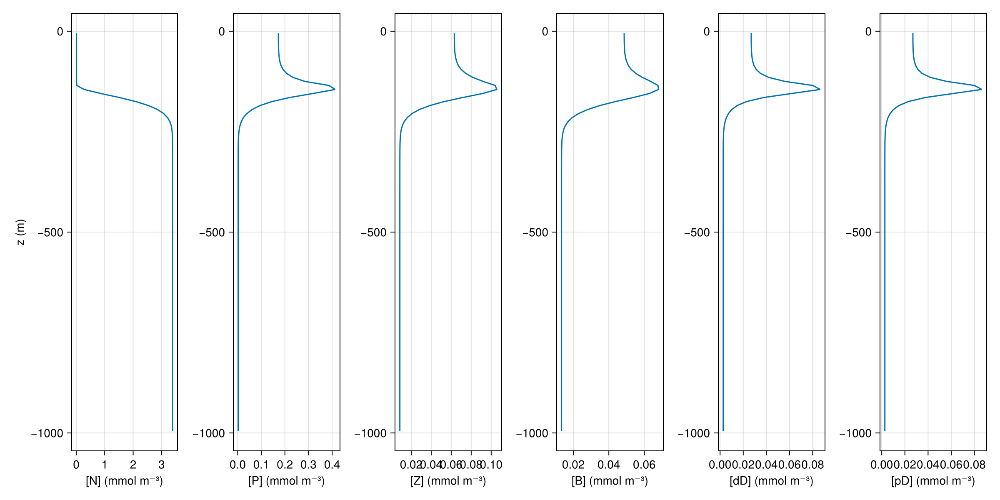
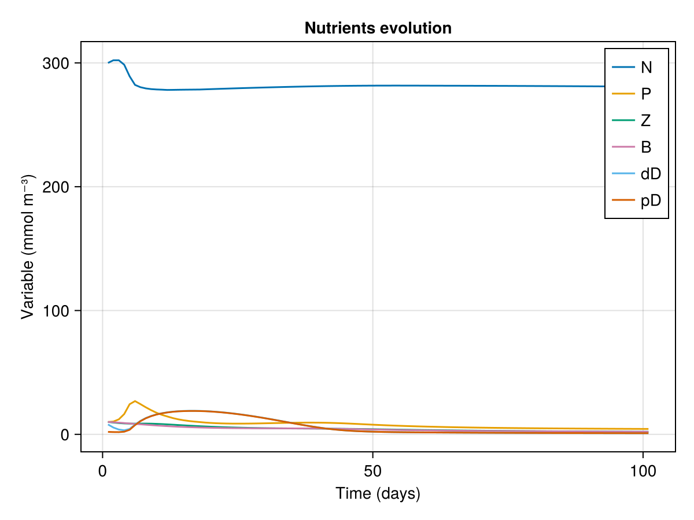

Nutrients, plankton, bacteria, detritus
This example illustrates how to use ClimaOceanBiogeochemistry's NutrientsPlanktonBacteriaDetrius model in a single column context.
using ClimaOceanBiogeochemistry: NutrientsPlanktonBacteriaDetritus
using Oceananigans
using Oceananigans.Units
using Printf
using CairoMakieA single column grid
We set up a single column grid whose depth is H and with Nz points
H = 1000meters
z = (-H, 0)
Nz = 100
grid = RectilinearGrid(size = Nz; z, topology = (Flat, Flat, Bounded))1×1×100 RectilinearGrid{Float64, Oceananigans.Grids.Flat, Oceananigans.Grids.Flat, Oceananigans.Grids.Bounded} on Oceananigans.Architectures.CPU with 0×0×3 halo
├── Flat x
├── Flat y
└── Bounded z ∈ [-1000.0, 0.0] regularly spaced with Δz=10.0A prescribed vertical tracer diffusivity
We define a tracer diffusivity that mixes a lot near the surface (in the top 50 m), and less down below.
@inline κ(z, t) = 1e-4 + 1e-2 * exp(z / 25) + 1e-2 * exp(-(z + 1000) / 50)
vertical_diffusion = VerticalScalarDiffusivity(; κ)VerticalScalarDiffusivity{ExplicitTimeDiscretization}(ν=0.0, κ=κ (generic function with 1 method))We put the pieces together. The important line here is biogeochemistry = NutrientsPlanktonBacteriaDetritus(; grid). We use all default parameters.
model = HydrostaticFreeSurfaceModel(; grid,
velocities = PrescribedVelocityFields(),
biogeochemistry = NutrientsPlanktonBacteriaDetritus(; grid),
tracers = (:N, :P, :Z, :B, :D1, :D2),
tracer_advection = WENO(),
buoyancy = nothing,
closure = vertical_diffusion)HydrostaticFreeSurfaceModel{CPU, RectilinearGrid}(time = 0 seconds, iteration = 0)
├── grid: 1×1×100 RectilinearGrid{Float64, Oceananigans.Grids.Flat, Oceananigans.Grids.Flat, Oceananigans.Grids.Bounded} on Oceananigans.Architectures.CPU with 0×0×3 halo
├── timestepper: QuasiAdamsBashforth2TimeStepper
├── tracers: (N, P, Z, B, D1, D2)
├── closure: VerticalScalarDiffusivity{ExplicitTimeDiscretization}(ν=0.0, κ=(N=κ (generic function with 1 method), P=κ (generic function with 1 method), Z=κ (generic function with 1 method), B=κ (generic function with 1 method), D1=κ (generic function with 1 method), D2=κ (generic function with 1 method)))
├── buoyancy: Nothing
├── advection scheme:
│ ├── momentum: Centered reconstruction order 2
│ ├── N: Nothing
│ ├── P: Nothing
│ ├── Z: Nothing
│ ├── B: Nothing
│ ├── D1: Nothing
│ └── D2: Nothing
└── coriolis: NothingInitial conditions
We initialize the model with reasonable nutrients, detritus, and a nutrient mixed layer.
set!(model, N=3, P=1e-1, Z=1e-1, B=1e-1, D1=8e-2, D2=2e-2)
simulation = Simulation(model, Δt=30minutes, stop_time=100days)
function progress(sim)
@printf("Iteration: %d, time: %s, total(N): %.2e \n",
iteration(sim), prettytime(sim),
sum(model.tracers.N) + sum(model.tracers.P) + sum(model.tracers.B) + sum(model.tracers.D1) + sum(model.tracers.D2))
return nothing
end
simulation.callbacks[:progress] = Callback(progress, IterationInterval(10))Callback of progress on IterationInterval(10)Let's see the initial condition
N = model.tracers.N
P = model.tracers.P
Z = model.tracers.Z
B = model.tracers.B
D1 = model.tracers.D1
D2 = model.tracers.D2
z = znodes(N)
fig = Figure(size=(1200, 600))
axN = Axis(fig[1, 1], xlabel="Nutrient concentration (N)", ylabel="z (m)")
axP = Axis(fig[1, 2], xlabel="Phytoplankton concentration (P)")
axZ = Axis(fig[1, 3], xlabel="Zooplankton concentration (Z)")
axB = Axis(fig[1, 4], xlabel="Bacteria concentration (B)")
axD1 = Axis(fig[1, 5], xlabel="Detritus concentration (D1)")
axD2 = Axis(fig[1, 6], xlabel="Detritus concentration (D2)")
lines!(axN, interior(N, 1, 1, :), z)
lines!(axP, interior(P, 1, 1, :), z)
lines!(axZ, interior(Z, 1, 1, :), z)
lines!(axB, interior(B, 1, 1, :), z)
lines!(axD1, interior(D1, 1, 1, :), z)
lines!(axD2, interior(D2, 1, 1, :), z)
current_figure()Now we add an output writer to the simulation and run the simulation.
filename = "nutrients_plankton_bacteria_detritus.jld2"
simulation.output_writers[:fields] = JLD2OutputWriter(model, model.tracers;
filename,
schedule = TimeInterval(1day),
overwrite_existing = true)
run!(simulation)┌ Warning: some parameters could not be resolved for type Oceananigans.TurbulenceClosures.ScalarDiffusivity{Oceananigans.TurbulenceClosures.ExplicitTimeDiscretization,Oceananigans.TurbulenceClosures.VerticalFormulation,Float64,NamedTuple{(:N, :P, :Z, :B, :D1, :D2),Tuple{Vararg{T, N}} where {N, T}{6,Main.#κ}},Float64}; reconstructing
└ @ JLD2 ~/.julia/packages/JLD2/VWinU/src/data/reconstructing_datatypes.jl:617
┌ Warning: some parameters could not be resolved for type Oceananigans.TurbulenceClosures.ScalarDiffusivity{Oceananigans.TurbulenceClosures.ExplicitTimeDiscretization,Oceananigans.TurbulenceClosures.VerticalFormulation,Float64,NamedTuple{(:N, :P, :Z, :B, :D1, :D2),Tuple{Vararg{T, N}} where {N, T}{6,Main.#κ}},Float64}; reconstructing
└ @ JLD2 ~/.julia/packages/JLD2/VWinU/src/data/reconstructing_datatypes.jl:617
┌ Warning: some parameters could not be resolved for type Oceananigans.TurbulenceClosures.ScalarDiffusivity{Oceananigans.TurbulenceClosures.ExplicitTimeDiscretization,Oceananigans.TurbulenceClosures.VerticalFormulation,Float64,NamedTuple{(:N, :P, :Z, :B, :D1, :D2),Tuple{Vararg{T, N}} where {N, T}{6,Main.#κ}},Float64}; reconstructing
└ @ JLD2 ~/.julia/packages/JLD2/VWinU/src/data/reconstructing_datatypes.jl:617
┌ Warning: some parameters could not be resolved for type Oceananigans.TurbulenceClosures.ScalarDiffusivity{Oceananigans.TurbulenceClosures.ExplicitTimeDiscretization,Oceananigans.TurbulenceClosures.VerticalFormulation,Float64,NamedTuple{(:N, :P, :Z, :B, :D1, :D2),Tuple{Vararg{T, N}} where {N, T}{6,Main.#κ}},Float64}; reconstructing
└ @ JLD2 ~/.julia/packages/JLD2/VWinU/src/data/reconstructing_datatypes.jl:617
┌ Warning: some parameters could not be resolved for type Oceananigans.TurbulenceClosures.ScalarDiffusivity{Oceananigans.TurbulenceClosures.ExplicitTimeDiscretization,Oceananigans.TurbulenceClosures.VerticalFormulation,Float64,NamedTuple{(:N, :P, :Z, :B, :D1, :D2),Tuple{Vararg{T, N}} where {N, T}{6,Main.#κ}},Float64}; reconstructing
└ @ JLD2 ~/.julia/packages/JLD2/VWinU/src/data/reconstructing_datatypes.jl:617
┌ Warning: some parameters could not be resolved for type Oceananigans.TurbulenceClosures.ScalarDiffusivity{Oceananigans.TurbulenceClosures.ExplicitTimeDiscretization,Oceananigans.TurbulenceClosures.VerticalFormulation,Float64,NamedTuple{(:N, :P, :Z, :B, :D1, :D2),Tuple{Vararg{T, N}} where {N, T}{6,Main.#κ}},Float64}; reconstructing
└ @ JLD2 ~/.julia/packages/JLD2/VWinU/src/data/reconstructing_datatypes.jl:617
[ Info: Initializing simulation...
Iteration: 0, time: 0 seconds, total(N): 3.30e+02
┌ Warning: some parameters could not be resolved for type Oceananigans.TurbulenceClosures.ScalarDiffusivity{Oceananigans.TurbulenceClosures.ExplicitTimeDiscretization,Oceananigans.TurbulenceClosures.VerticalFormulation,Float64,NamedTuple{(:N, :P, :Z, :B, :D1, :D2),Tuple{Vararg{T, N}} where {N, T}{6,Main.#κ}},Float64}; reconstructing
└ @ JLD2 ~/.julia/packages/JLD2/VWinU/src/data/reconstructing_datatypes.jl:617
[ Info: ... simulation initialization complete (1.875 seconds)
[ Info: Executing initial time step...
[ Info: ... initial time step complete (3.051 seconds).
Iteration: 10, time: 5 hours, total(N): 3.30e+02
Iteration: 20, time: 10 hours, total(N): 3.30e+02
Iteration: 30, time: 15 hours, total(N): 3.30e+02
Iteration: 40, time: 20 hours, total(N): 3.30e+02
┌ Warning: some parameters could not be resolved for type Oceananigans.TurbulenceClosures.ScalarDiffusivity{Oceananigans.TurbulenceClosures.ExplicitTimeDiscretization,Oceananigans.TurbulenceClosures.VerticalFormulation,Float64,NamedTuple{(:N, :P, :Z, :B, :D1, :D2),Tuple{Vararg{T, N}} where {N, T}{6,Main.#κ}},Float64}; reconstructing
└ @ JLD2 ~/.julia/packages/JLD2/VWinU/src/data/reconstructing_datatypes.jl:617
Iteration: 50, time: 1.042 days, total(N): 3.30e+02
Iteration: 60, time: 1.250 days, total(N): 3.30e+02
Iteration: 70, time: 1.458 days, total(N): 3.30e+02
Iteration: 80, time: 1.667 days, total(N): 3.29e+02
Iteration: 90, time: 1.875 days, total(N): 3.29e+02
┌ Warning: some parameters could not be resolved for type Oceananigans.TurbulenceClosures.ScalarDiffusivity{Oceananigans.TurbulenceClosures.ExplicitTimeDiscretization,Oceananigans.TurbulenceClosures.VerticalFormulation,Float64,NamedTuple{(:N, :P, :Z, :B, :D1, :D2),Tuple{Vararg{T, N}} where {N, T}{6,Main.#κ}},Float64}; reconstructing
└ @ JLD2 ~/.julia/packages/JLD2/VWinU/src/data/reconstructing_datatypes.jl:617
Iteration: 100, time: 2.083 days, total(N): 3.29e+02
Iteration: 110, time: 2.292 days, total(N): 3.29e+02
Iteration: 120, time: 2.500 days, total(N): 3.29e+02
Iteration: 130, time: 2.708 days, total(N): 3.29e+02
Iteration: 140, time: 2.917 days, total(N): 3.29e+02
┌ Warning: some parameters could not be resolved for type Oceananigans.TurbulenceClosures.ScalarDiffusivity{Oceananigans.TurbulenceClosures.ExplicitTimeDiscretization,Oceananigans.TurbulenceClosures.VerticalFormulation,Float64,NamedTuple{(:N, :P, :Z, :B, :D1, :D2),Tuple{Vararg{T, N}} where {N, T}{6,Main.#κ}},Float64}; reconstructing
└ @ JLD2 ~/.julia/packages/JLD2/VWinU/src/data/reconstructing_datatypes.jl:617
Iteration: 150, time: 3.125 days, total(N): 3.29e+02
Iteration: 160, time: 3.333 days, total(N): 3.30e+02
Iteration: 170, time: 3.542 days, total(N): 3.30e+02
Iteration: 180, time: 3.750 days, total(N): 3.30e+02
Iteration: 190, time: 3.958 days, total(N): 3.30e+02
┌ Warning: some parameters could not be resolved for type Oceananigans.TurbulenceClosures.ScalarDiffusivity{Oceananigans.TurbulenceClosures.ExplicitTimeDiscretization,Oceananigans.TurbulenceClosures.VerticalFormulation,Float64,NamedTuple{(:N, :P, :Z, :B, :D1, :D2),Tuple{Vararg{T, N}} where {N, T}{6,Main.#κ}},Float64}; reconstructing
└ @ JLD2 ~/.julia/packages/JLD2/VWinU/src/data/reconstructing_datatypes.jl:617
Iteration: 200, time: 4.167 days, total(N): 3.31e+02
Iteration: 210, time: 4.375 days, total(N): 3.31e+02
Iteration: 220, time: 4.583 days, total(N): 3.32e+02
Iteration: 230, time: 4.792 days, total(N): 3.32e+02
Iteration: 240, time: 5 days, total(N): 3.33e+02
┌ Warning: some parameters could not be resolved for type Oceananigans.TurbulenceClosures.ScalarDiffusivity{Oceananigans.TurbulenceClosures.ExplicitTimeDiscretization,Oceananigans.TurbulenceClosures.VerticalFormulation,Float64,NamedTuple{(:N, :P, :Z, :B, :D1, :D2),Tuple{Vararg{T, N}} where {N, T}{6,Main.#κ}},Float64}; reconstructing
└ @ JLD2 ~/.julia/packages/JLD2/VWinU/src/data/reconstructing_datatypes.jl:617
Iteration: 250, time: 5.208 days, total(N): 3.33e+02
Iteration: 260, time: 5.417 days, total(N): 3.34e+02
Iteration: 270, time: 5.625 days, total(N): 3.34e+02
Iteration: 280, time: 5.833 days, total(N): 3.34e+02
┌ Warning: some parameters could not be resolved for type Oceananigans.TurbulenceClosures.ScalarDiffusivity{Oceananigans.TurbulenceClosures.ExplicitTimeDiscretization,Oceananigans.TurbulenceClosures.VerticalFormulation,Float64,NamedTuple{(:N, :P, :Z, :B, :D1, :D2),Tuple{Vararg{T, N}} where {N, T}{6,Main.#κ}},Float64}; reconstructing
└ @ JLD2 ~/.julia/packages/JLD2/VWinU/src/data/reconstructing_datatypes.jl:617
Iteration: 290, time: 6.042 days, total(N): 3.34e+02
Iteration: 300, time: 6.250 days, total(N): 3.35e+02
Iteration: 310, time: 6.458 days, total(N): 3.35e+02
Iteration: 320, time: 6.667 days, total(N): 3.35e+02
Iteration: 330, time: 6.875 days, total(N): 3.35e+02
┌ Warning: some parameters could not be resolved for type Oceananigans.TurbulenceClosures.ScalarDiffusivity{Oceananigans.TurbulenceClosures.ExplicitTimeDiscretization,Oceananigans.TurbulenceClosures.VerticalFormulation,Float64,NamedTuple{(:N, :P, :Z, :B, :D1, :D2),Tuple{Vararg{T, N}} where {N, T}{6,Main.#κ}},Float64}; reconstructing
└ @ JLD2 ~/.julia/packages/JLD2/VWinU/src/data/reconstructing_datatypes.jl:617
Iteration: 340, time: 7.083 days, total(N): 3.35e+02
Iteration: 350, time: 7.292 days, total(N): 3.35e+02
Iteration: 360, time: 7.500 days, total(N): 3.35e+02
Iteration: 370, time: 7.708 days, total(N): 3.35e+02
Iteration: 380, time: 7.917 days, total(N): 3.35e+02
┌ Warning: some parameters could not be resolved for type Oceananigans.TurbulenceClosures.ScalarDiffusivity{Oceananigans.TurbulenceClosures.ExplicitTimeDiscretization,Oceananigans.TurbulenceClosures.VerticalFormulation,Float64,NamedTuple{(:N, :P, :Z, :B, :D1, :D2),Tuple{Vararg{T, N}} where {N, T}{6,Main.#κ}},Float64}; reconstructing
└ @ JLD2 ~/.julia/packages/JLD2/VWinU/src/data/reconstructing_datatypes.jl:617
Iteration: 390, time: 8.125 days, total(N): 3.35e+02
Iteration: 400, time: 8.333 days, total(N): 3.35e+02
Iteration: 410, time: 8.542 days, total(N): 3.35e+02
Iteration: 420, time: 8.750 days, total(N): 3.35e+02
Iteration: 430, time: 8.958 days, total(N): 3.35e+02
┌ Warning: some parameters could not be resolved for type Oceananigans.TurbulenceClosures.ScalarDiffusivity{Oceananigans.TurbulenceClosures.ExplicitTimeDiscretization,Oceananigans.TurbulenceClosures.VerticalFormulation,Float64,NamedTuple{(:N, :P, :Z, :B, :D1, :D2),Tuple{Vararg{T, N}} where {N, T}{6,Main.#κ}},Float64}; reconstructing
└ @ JLD2 ~/.julia/packages/JLD2/VWinU/src/data/reconstructing_datatypes.jl:617
Iteration: 440, time: 9.167 days, total(N): 3.35e+02
Iteration: 450, time: 9.375 days, total(N): 3.35e+02
Iteration: 460, time: 9.583 days, total(N): 3.35e+02
Iteration: 470, time: 9.792 days, total(N): 3.35e+02
Iteration: 480, time: 10 days, total(N): 3.35e+02
┌ Warning: some parameters could not be resolved for type Oceananigans.TurbulenceClosures.ScalarDiffusivity{Oceananigans.TurbulenceClosures.ExplicitTimeDiscretization,Oceananigans.TurbulenceClosures.VerticalFormulation,Float64,NamedTuple{(:N, :P, :Z, :B, :D1, :D2),Tuple{Vararg{T, N}} where {N, T}{6,Main.#κ}},Float64}; reconstructing
└ @ JLD2 ~/.julia/packages/JLD2/VWinU/src/data/reconstructing_datatypes.jl:617
Iteration: 490, time: 10.208 days, total(N): 3.35e+02
Iteration: 500, time: 10.417 days, total(N): 3.35e+02
Iteration: 510, time: 10.625 days, total(N): 3.35e+02
Iteration: 520, time: 10.833 days, total(N): 3.35e+02
┌ Warning: some parameters could not be resolved for type Oceananigans.TurbulenceClosures.ScalarDiffusivity{Oceananigans.TurbulenceClosures.ExplicitTimeDiscretization,Oceananigans.TurbulenceClosures.VerticalFormulation,Float64,NamedTuple{(:N, :P, :Z, :B, :D1, :D2),Tuple{Vararg{T, N}} where {N, T}{6,Main.#κ}},Float64}; reconstructing
└ @ JLD2 ~/.julia/packages/JLD2/VWinU/src/data/reconstructing_datatypes.jl:617
Iteration: 530, time: 11.042 days, total(N): 3.35e+02
Iteration: 540, time: 11.250 days, total(N): 3.35e+02
Iteration: 550, time: 11.458 days, total(N): 3.35e+02
Iteration: 560, time: 11.667 days, total(N): 3.34e+02
Iteration: 570, time: 11.875 days, total(N): 3.34e+02
┌ Warning: some parameters could not be resolved for type Oceananigans.TurbulenceClosures.ScalarDiffusivity{Oceananigans.TurbulenceClosures.ExplicitTimeDiscretization,Oceananigans.TurbulenceClosures.VerticalFormulation,Float64,NamedTuple{(:N, :P, :Z, :B, :D1, :D2),Tuple{Vararg{T, N}} where {N, T}{6,Main.#κ}},Float64}; reconstructing
└ @ JLD2 ~/.julia/packages/JLD2/VWinU/src/data/reconstructing_datatypes.jl:617
Iteration: 580, time: 12.083 days, total(N): 3.34e+02
Iteration: 590, time: 12.292 days, total(N): 3.34e+02
Iteration: 600, time: 12.500 days, total(N): 3.34e+02
Iteration: 610, time: 12.708 days, total(N): 3.34e+02
Iteration: 620, time: 12.917 days, total(N): 3.34e+02
┌ Warning: some parameters could not be resolved for type Oceananigans.TurbulenceClosures.ScalarDiffusivity{Oceananigans.TurbulenceClosures.ExplicitTimeDiscretization,Oceananigans.TurbulenceClosures.VerticalFormulation,Float64,NamedTuple{(:N, :P, :Z, :B, :D1, :D2),Tuple{Vararg{T, N}} where {N, T}{6,Main.#κ}},Float64}; reconstructing
└ @ JLD2 ~/.julia/packages/JLD2/VWinU/src/data/reconstructing_datatypes.jl:617
Iteration: 630, time: 13.125 days, total(N): 3.34e+02
Iteration: 640, time: 13.333 days, total(N): 3.34e+02
Iteration: 650, time: 13.542 days, total(N): 3.34e+02
Iteration: 660, time: 13.750 days, total(N): 3.34e+02
Iteration: 670, time: 13.958 days, total(N): 3.33e+02
┌ Warning: some parameters could not be resolved for type Oceananigans.TurbulenceClosures.ScalarDiffusivity{Oceananigans.TurbulenceClosures.ExplicitTimeDiscretization,Oceananigans.TurbulenceClosures.VerticalFormulation,Float64,NamedTuple{(:N, :P, :Z, :B, :D1, :D2),Tuple{Vararg{T, N}} where {N, T}{6,Main.#κ}},Float64}; reconstructing
└ @ JLD2 ~/.julia/packages/JLD2/VWinU/src/data/reconstructing_datatypes.jl:617
Iteration: 680, time: 14.167 days, total(N): 3.33e+02
Iteration: 690, time: 14.375 days, total(N): 3.33e+02
Iteration: 700, time: 14.583 days, total(N): 3.33e+02
Iteration: 710, time: 14.792 days, total(N): 3.33e+02
Iteration: 720, time: 15 days, total(N): 3.33e+02
┌ Warning: some parameters could not be resolved for type Oceananigans.TurbulenceClosures.ScalarDiffusivity{Oceananigans.TurbulenceClosures.ExplicitTimeDiscretization,Oceananigans.TurbulenceClosures.VerticalFormulation,Float64,NamedTuple{(:N, :P, :Z, :B, :D1, :D2),Tuple{Vararg{T, N}} where {N, T}{6,Main.#κ}},Float64}; reconstructing
└ @ JLD2 ~/.julia/packages/JLD2/VWinU/src/data/reconstructing_datatypes.jl:617
Iteration: 730, time: 15.208 days, total(N): 3.33e+02
Iteration: 740, time: 15.417 days, total(N): 3.33e+02
Iteration: 750, time: 15.625 days, total(N): 3.33e+02
Iteration: 760, time: 15.833 days, total(N): 3.32e+02
┌ Warning: some parameters could not be resolved for type Oceananigans.TurbulenceClosures.ScalarDiffusivity{Oceananigans.TurbulenceClosures.ExplicitTimeDiscretization,Oceananigans.TurbulenceClosures.VerticalFormulation,Float64,NamedTuple{(:N, :P, :Z, :B, :D1, :D2),Tuple{Vararg{T, N}} where {N, T}{6,Main.#κ}},Float64}; reconstructing
└ @ JLD2 ~/.julia/packages/JLD2/VWinU/src/data/reconstructing_datatypes.jl:617
Iteration: 770, time: 16.042 days, total(N): 3.32e+02
Iteration: 780, time: 16.250 days, total(N): 3.32e+02
Iteration: 790, time: 16.458 days, total(N): 3.32e+02
Iteration: 800, time: 16.667 days, total(N): 3.32e+02
Iteration: 810, time: 16.875 days, total(N): 3.32e+02
┌ Warning: some parameters could not be resolved for type Oceananigans.TurbulenceClosures.ScalarDiffusivity{Oceananigans.TurbulenceClosures.ExplicitTimeDiscretization,Oceananigans.TurbulenceClosures.VerticalFormulation,Float64,NamedTuple{(:N, :P, :Z, :B, :D1, :D2),Tuple{Vararg{T, N}} where {N, T}{6,Main.#κ}},Float64}; reconstructing
└ @ JLD2 ~/.julia/packages/JLD2/VWinU/src/data/reconstructing_datatypes.jl:617
Iteration: 820, time: 17.083 days, total(N): 3.32e+02
Iteration: 830, time: 17.292 days, total(N): 3.32e+02
Iteration: 840, time: 17.500 days, total(N): 3.31e+02
Iteration: 850, time: 17.708 days, total(N): 3.31e+02
Iteration: 860, time: 17.917 days, total(N): 3.31e+02
┌ Warning: some parameters could not be resolved for type Oceananigans.TurbulenceClosures.ScalarDiffusivity{Oceananigans.TurbulenceClosures.ExplicitTimeDiscretization,Oceananigans.TurbulenceClosures.VerticalFormulation,Float64,NamedTuple{(:N, :P, :Z, :B, :D1, :D2),Tuple{Vararg{T, N}} where {N, T}{6,Main.#κ}},Float64}; reconstructing
└ @ JLD2 ~/.julia/packages/JLD2/VWinU/src/data/reconstructing_datatypes.jl:617
Iteration: 870, time: 18.125 days, total(N): 3.31e+02
Iteration: 880, time: 18.333 days, total(N): 3.31e+02
Iteration: 890, time: 18.542 days, total(N): 3.31e+02
Iteration: 900, time: 18.750 days, total(N): 3.31e+02
Iteration: 910, time: 18.958 days, total(N): 3.30e+02
┌ Warning: some parameters could not be resolved for type Oceananigans.TurbulenceClosures.ScalarDiffusivity{Oceananigans.TurbulenceClosures.ExplicitTimeDiscretization,Oceananigans.TurbulenceClosures.VerticalFormulation,Float64,NamedTuple{(:N, :P, :Z, :B, :D1, :D2),Tuple{Vararg{T, N}} where {N, T}{6,Main.#κ}},Float64}; reconstructing
└ @ JLD2 ~/.julia/packages/JLD2/VWinU/src/data/reconstructing_datatypes.jl:617
Iteration: 920, time: 19.167 days, total(N): 3.30e+02
Iteration: 930, time: 19.375 days, total(N): 3.30e+02
Iteration: 940, time: 19.583 days, total(N): 3.30e+02
Iteration: 950, time: 19.792 days, total(N): 3.30e+02
Iteration: 960, time: 20 days, total(N): 3.30e+02
┌ Warning: some parameters could not be resolved for type Oceananigans.TurbulenceClosures.ScalarDiffusivity{Oceananigans.TurbulenceClosures.ExplicitTimeDiscretization,Oceananigans.TurbulenceClosures.VerticalFormulation,Float64,NamedTuple{(:N, :P, :Z, :B, :D1, :D2),Tuple{Vararg{T, N}} where {N, T}{6,Main.#κ}},Float64}; reconstructing
└ @ JLD2 ~/.julia/packages/JLD2/VWinU/src/data/reconstructing_datatypes.jl:617
Iteration: 970, time: 20.208 days, total(N): 3.29e+02
Iteration: 980, time: 20.417 days, total(N): 3.29e+02
Iteration: 990, time: 20.625 days, total(N): 3.29e+02
Iteration: 1000, time: 20.833 days, total(N): 3.29e+02
┌ Warning: some parameters could not be resolved for type Oceananigans.TurbulenceClosures.ScalarDiffusivity{Oceananigans.TurbulenceClosures.ExplicitTimeDiscretization,Oceananigans.TurbulenceClosures.VerticalFormulation,Float64,NamedTuple{(:N, :P, :Z, :B, :D1, :D2),Tuple{Vararg{T, N}} where {N, T}{6,Main.#κ}},Float64}; reconstructing
└ @ JLD2 ~/.julia/packages/JLD2/VWinU/src/data/reconstructing_datatypes.jl:617
Iteration: 1010, time: 21.042 days, total(N): 3.29e+02
Iteration: 1020, time: 21.250 days, total(N): 3.29e+02
Iteration: 1030, time: 21.458 days, total(N): 3.28e+02
Iteration: 1040, time: 21.667 days, total(N): 3.28e+02
Iteration: 1050, time: 21.875 days, total(N): 3.28e+02
┌ Warning: some parameters could not be resolved for type Oceananigans.TurbulenceClosures.ScalarDiffusivity{Oceananigans.TurbulenceClosures.ExplicitTimeDiscretization,Oceananigans.TurbulenceClosures.VerticalFormulation,Float64,NamedTuple{(:N, :P, :Z, :B, :D1, :D2),Tuple{Vararg{T, N}} where {N, T}{6,Main.#κ}},Float64}; reconstructing
└ @ JLD2 ~/.julia/packages/JLD2/VWinU/src/data/reconstructing_datatypes.jl:617
Iteration: 1060, time: 22.083 days, total(N): 3.28e+02
Iteration: 1070, time: 22.292 days, total(N): 3.28e+02
Iteration: 1080, time: 22.500 days, total(N): 3.27e+02
Iteration: 1090, time: 22.708 days, total(N): 3.27e+02
Iteration: 1100, time: 22.917 days, total(N): 3.27e+02
┌ Warning: some parameters could not be resolved for type Oceananigans.TurbulenceClosures.ScalarDiffusivity{Oceananigans.TurbulenceClosures.ExplicitTimeDiscretization,Oceananigans.TurbulenceClosures.VerticalFormulation,Float64,NamedTuple{(:N, :P, :Z, :B, :D1, :D2),Tuple{Vararg{T, N}} where {N, T}{6,Main.#κ}},Float64}; reconstructing
└ @ JLD2 ~/.julia/packages/JLD2/VWinU/src/data/reconstructing_datatypes.jl:617
Iteration: 1110, time: 23.125 days, total(N): 3.27e+02
Iteration: 1120, time: 23.333 days, total(N): 3.27e+02
Iteration: 1130, time: 23.542 days, total(N): 3.26e+02
Iteration: 1140, time: 23.750 days, total(N): 3.26e+02
Iteration: 1150, time: 23.958 days, total(N): 3.26e+02
┌ Warning: some parameters could not be resolved for type Oceananigans.TurbulenceClosures.ScalarDiffusivity{Oceananigans.TurbulenceClosures.ExplicitTimeDiscretization,Oceananigans.TurbulenceClosures.VerticalFormulation,Float64,NamedTuple{(:N, :P, :Z, :B, :D1, :D2),Tuple{Vararg{T, N}} where {N, T}{6,Main.#κ}},Float64}; reconstructing
└ @ JLD2 ~/.julia/packages/JLD2/VWinU/src/data/reconstructing_datatypes.jl:617
Iteration: 1160, time: 24.167 days, total(N): 3.26e+02
Iteration: 1170, time: 24.375 days, total(N): 3.26e+02
Iteration: 1180, time: 24.583 days, total(N): 3.25e+02
Iteration: 1190, time: 24.792 days, total(N): 3.25e+02
Iteration: 1200, time: 25 days, total(N): 3.25e+02
┌ Warning: some parameters could not be resolved for type Oceananigans.TurbulenceClosures.ScalarDiffusivity{Oceananigans.TurbulenceClosures.ExplicitTimeDiscretization,Oceananigans.TurbulenceClosures.VerticalFormulation,Float64,NamedTuple{(:N, :P, :Z, :B, :D1, :D2),Tuple{Vararg{T, N}} where {N, T}{6,Main.#κ}},Float64}; reconstructing
└ @ JLD2 ~/.julia/packages/JLD2/VWinU/src/data/reconstructing_datatypes.jl:617
Iteration: 1210, time: 25.208 days, total(N): 3.25e+02
Iteration: 1220, time: 25.417 days, total(N): 3.24e+02
Iteration: 1230, time: 25.625 days, total(N): 3.24e+02
Iteration: 1240, time: 25.833 days, total(N): 3.24e+02
┌ Warning: some parameters could not be resolved for type Oceananigans.TurbulenceClosures.ScalarDiffusivity{Oceananigans.TurbulenceClosures.ExplicitTimeDiscretization,Oceananigans.TurbulenceClosures.VerticalFormulation,Float64,NamedTuple{(:N, :P, :Z, :B, :D1, :D2),Tuple{Vararg{T, N}} where {N, T}{6,Main.#κ}},Float64}; reconstructing
└ @ JLD2 ~/.julia/packages/JLD2/VWinU/src/data/reconstructing_datatypes.jl:617
Iteration: 1250, time: 26.042 days, total(N): 3.24e+02
Iteration: 1260, time: 26.250 days, total(N): 3.23e+02
Iteration: 1270, time: 26.458 days, total(N): 3.23e+02
Iteration: 1280, time: 26.667 days, total(N): 3.23e+02
Iteration: 1290, time: 26.875 days, total(N): 3.23e+02
┌ Warning: some parameters could not be resolved for type Oceananigans.TurbulenceClosures.ScalarDiffusivity{Oceananigans.TurbulenceClosures.ExplicitTimeDiscretization,Oceananigans.TurbulenceClosures.VerticalFormulation,Float64,NamedTuple{(:N, :P, :Z, :B, :D1, :D2),Tuple{Vararg{T, N}} where {N, T}{6,Main.#κ}},Float64}; reconstructing
└ @ JLD2 ~/.julia/packages/JLD2/VWinU/src/data/reconstructing_datatypes.jl:617
Iteration: 1300, time: 27.083 days, total(N): 3.23e+02
Iteration: 1310, time: 27.292 days, total(N): 3.22e+02
Iteration: 1320, time: 27.500 days, total(N): 3.22e+02
Iteration: 1330, time: 27.708 days, total(N): 3.22e+02
Iteration: 1340, time: 27.917 days, total(N): 3.22e+02
┌ Warning: some parameters could not be resolved for type Oceananigans.TurbulenceClosures.ScalarDiffusivity{Oceananigans.TurbulenceClosures.ExplicitTimeDiscretization,Oceananigans.TurbulenceClosures.VerticalFormulation,Float64,NamedTuple{(:N, :P, :Z, :B, :D1, :D2),Tuple{Vararg{T, N}} where {N, T}{6,Main.#κ}},Float64}; reconstructing
└ @ JLD2 ~/.julia/packages/JLD2/VWinU/src/data/reconstructing_datatypes.jl:617
Iteration: 1350, time: 28.125 days, total(N): 3.21e+02
Iteration: 1360, time: 28.333 days, total(N): 3.21e+02
Iteration: 1370, time: 28.542 days, total(N): 3.21e+02
Iteration: 1380, time: 28.750 days, total(N): 3.20e+02
Iteration: 1390, time: 28.958 days, total(N): 3.20e+02
┌ Warning: some parameters could not be resolved for type Oceananigans.TurbulenceClosures.ScalarDiffusivity{Oceananigans.TurbulenceClosures.ExplicitTimeDiscretization,Oceananigans.TurbulenceClosures.VerticalFormulation,Float64,NamedTuple{(:N, :P, :Z, :B, :D1, :D2),Tuple{Vararg{T, N}} where {N, T}{6,Main.#κ}},Float64}; reconstructing
└ @ JLD2 ~/.julia/packages/JLD2/VWinU/src/data/reconstructing_datatypes.jl:617
Iteration: 1400, time: 29.167 days, total(N): 3.20e+02
Iteration: 1410, time: 29.375 days, total(N): 3.20e+02
Iteration: 1420, time: 29.583 days, total(N): 3.19e+02
Iteration: 1430, time: 29.792 days, total(N): 3.19e+02
Iteration: 1440, time: 30 days, total(N): 3.19e+02
┌ Warning: some parameters could not be resolved for type Oceananigans.TurbulenceClosures.ScalarDiffusivity{Oceananigans.TurbulenceClosures.ExplicitTimeDiscretization,Oceananigans.TurbulenceClosures.VerticalFormulation,Float64,NamedTuple{(:N, :P, :Z, :B, :D1, :D2),Tuple{Vararg{T, N}} where {N, T}{6,Main.#κ}},Float64}; reconstructing
└ @ JLD2 ~/.julia/packages/JLD2/VWinU/src/data/reconstructing_datatypes.jl:617
Iteration: 1450, time: 30.208 days, total(N): 3.19e+02
Iteration: 1460, time: 30.417 days, total(N): 3.18e+02
Iteration: 1470, time: 30.625 days, total(N): 3.18e+02
Iteration: 1480, time: 30.833 days, total(N): 3.18e+02
┌ Warning: some parameters could not be resolved for type Oceananigans.TurbulenceClosures.ScalarDiffusivity{Oceananigans.TurbulenceClosures.ExplicitTimeDiscretization,Oceananigans.TurbulenceClosures.VerticalFormulation,Float64,NamedTuple{(:N, :P, :Z, :B, :D1, :D2),Tuple{Vararg{T, N}} where {N, T}{6,Main.#κ}},Float64}; reconstructing
└ @ JLD2 ~/.julia/packages/JLD2/VWinU/src/data/reconstructing_datatypes.jl:617
Iteration: 1490, time: 31.042 days, total(N): 3.17e+02
Iteration: 1500, time: 31.250 days, total(N): 3.17e+02
Iteration: 1510, time: 31.458 days, total(N): 3.17e+02
Iteration: 1520, time: 31.667 days, total(N): 3.17e+02
Iteration: 1530, time: 31.875 days, total(N): 3.16e+02
┌ Warning: some parameters could not be resolved for type Oceananigans.TurbulenceClosures.ScalarDiffusivity{Oceananigans.TurbulenceClosures.ExplicitTimeDiscretization,Oceananigans.TurbulenceClosures.VerticalFormulation,Float64,NamedTuple{(:N, :P, :Z, :B, :D1, :D2),Tuple{Vararg{T, N}} where {N, T}{6,Main.#κ}},Float64}; reconstructing
└ @ JLD2 ~/.julia/packages/JLD2/VWinU/src/data/reconstructing_datatypes.jl:617
Iteration: 1540, time: 32.083 days, total(N): 3.16e+02
Iteration: 1550, time: 32.292 days, total(N): 3.16e+02
Iteration: 1560, time: 32.500 days, total(N): 3.15e+02
Iteration: 1570, time: 32.708 days, total(N): 3.15e+02
Iteration: 1580, time: 32.917 days, total(N): 3.15e+02
┌ Warning: some parameters could not be resolved for type Oceananigans.TurbulenceClosures.ScalarDiffusivity{Oceananigans.TurbulenceClosures.ExplicitTimeDiscretization,Oceananigans.TurbulenceClosures.VerticalFormulation,Float64,NamedTuple{(:N, :P, :Z, :B, :D1, :D2),Tuple{Vararg{T, N}} where {N, T}{6,Main.#κ}},Float64}; reconstructing
└ @ JLD2 ~/.julia/packages/JLD2/VWinU/src/data/reconstructing_datatypes.jl:617
Iteration: 1590, time: 33.125 days, total(N): 3.14e+02
Iteration: 1600, time: 33.333 days, total(N): 3.14e+02
Iteration: 1610, time: 33.542 days, total(N): 3.14e+02
Iteration: 1620, time: 33.750 days, total(N): 3.14e+02
Iteration: 1630, time: 33.958 days, total(N): 3.13e+02
┌ Warning: some parameters could not be resolved for type Oceananigans.TurbulenceClosures.ScalarDiffusivity{Oceananigans.TurbulenceClosures.ExplicitTimeDiscretization,Oceananigans.TurbulenceClosures.VerticalFormulation,Float64,NamedTuple{(:N, :P, :Z, :B, :D1, :D2),Tuple{Vararg{T, N}} where {N, T}{6,Main.#κ}},Float64}; reconstructing
└ @ JLD2 ~/.julia/packages/JLD2/VWinU/src/data/reconstructing_datatypes.jl:617
Iteration: 1640, time: 34.167 days, total(N): 3.13e+02
Iteration: 1650, time: 34.375 days, total(N): 3.13e+02
Iteration: 1660, time: 34.583 days, total(N): 3.12e+02
Iteration: 1670, time: 34.792 days, total(N): 3.12e+02
Iteration: 1680, time: 35 days, total(N): 3.12e+02
┌ Warning: some parameters could not be resolved for type Oceananigans.TurbulenceClosures.ScalarDiffusivity{Oceananigans.TurbulenceClosures.ExplicitTimeDiscretization,Oceananigans.TurbulenceClosures.VerticalFormulation,Float64,NamedTuple{(:N, :P, :Z, :B, :D1, :D2),Tuple{Vararg{T, N}} where {N, T}{6,Main.#κ}},Float64}; reconstructing
└ @ JLD2 ~/.julia/packages/JLD2/VWinU/src/data/reconstructing_datatypes.jl:617
Iteration: 1690, time: 35.208 days, total(N): 3.12e+02
Iteration: 1700, time: 35.417 days, total(N): 3.11e+02
Iteration: 1710, time: 35.625 days, total(N): 3.11e+02
Iteration: 1720, time: 35.833 days, total(N): 3.11e+02
┌ Warning: some parameters could not be resolved for type Oceananigans.TurbulenceClosures.ScalarDiffusivity{Oceananigans.TurbulenceClosures.ExplicitTimeDiscretization,Oceananigans.TurbulenceClosures.VerticalFormulation,Float64,NamedTuple{(:N, :P, :Z, :B, :D1, :D2),Tuple{Vararg{T, N}} where {N, T}{6,Main.#κ}},Float64}; reconstructing
└ @ JLD2 ~/.julia/packages/JLD2/VWinU/src/data/reconstructing_datatypes.jl:617
Iteration: 1730, time: 36.042 days, total(N): 3.10e+02
Iteration: 1740, time: 36.250 days, total(N): 3.10e+02
Iteration: 1750, time: 36.458 days, total(N): 3.10e+02
Iteration: 1760, time: 36.667 days, total(N): 3.09e+02
Iteration: 1770, time: 36.875 days, total(N): 3.09e+02
┌ Warning: some parameters could not be resolved for type Oceananigans.TurbulenceClosures.ScalarDiffusivity{Oceananigans.TurbulenceClosures.ExplicitTimeDiscretization,Oceananigans.TurbulenceClosures.VerticalFormulation,Float64,NamedTuple{(:N, :P, :Z, :B, :D1, :D2),Tuple{Vararg{T, N}} where {N, T}{6,Main.#κ}},Float64}; reconstructing
└ @ JLD2 ~/.julia/packages/JLD2/VWinU/src/data/reconstructing_datatypes.jl:617
Iteration: 1780, time: 37.083 days, total(N): 3.09e+02
Iteration: 1790, time: 37.292 days, total(N): 3.09e+02
Iteration: 1800, time: 37.500 days, total(N): 3.08e+02
Iteration: 1810, time: 37.708 days, total(N): 3.08e+02
Iteration: 1820, time: 37.917 days, total(N): 3.08e+02
┌ Warning: some parameters could not be resolved for type Oceananigans.TurbulenceClosures.ScalarDiffusivity{Oceananigans.TurbulenceClosures.ExplicitTimeDiscretization,Oceananigans.TurbulenceClosures.VerticalFormulation,Float64,NamedTuple{(:N, :P, :Z, :B, :D1, :D2),Tuple{Vararg{T, N}} where {N, T}{6,Main.#κ}},Float64}; reconstructing
└ @ JLD2 ~/.julia/packages/JLD2/VWinU/src/data/reconstructing_datatypes.jl:617
Iteration: 1830, time: 38.125 days, total(N): 3.07e+02
Iteration: 1840, time: 38.333 days, total(N): 3.07e+02
Iteration: 1850, time: 38.542 days, total(N): 3.07e+02
Iteration: 1860, time: 38.750 days, total(N): 3.07e+02
Iteration: 1870, time: 38.958 days, total(N): 3.06e+02
┌ Warning: some parameters could not be resolved for type Oceananigans.TurbulenceClosures.ScalarDiffusivity{Oceananigans.TurbulenceClosures.ExplicitTimeDiscretization,Oceananigans.TurbulenceClosures.VerticalFormulation,Float64,NamedTuple{(:N, :P, :Z, :B, :D1, :D2),Tuple{Vararg{T, N}} where {N, T}{6,Main.#κ}},Float64}; reconstructing
└ @ JLD2 ~/.julia/packages/JLD2/VWinU/src/data/reconstructing_datatypes.jl:617
Iteration: 1880, time: 39.167 days, total(N): 3.06e+02
Iteration: 1890, time: 39.375 days, total(N): 3.06e+02
Iteration: 1900, time: 39.583 days, total(N): 3.06e+02
Iteration: 1910, time: 39.792 days, total(N): 3.05e+02
Iteration: 1920, time: 40 days, total(N): 3.05e+02
┌ Warning: some parameters could not be resolved for type Oceananigans.TurbulenceClosures.ScalarDiffusivity{Oceananigans.TurbulenceClosures.ExplicitTimeDiscretization,Oceananigans.TurbulenceClosures.VerticalFormulation,Float64,NamedTuple{(:N, :P, :Z, :B, :D1, :D2),Tuple{Vararg{T, N}} where {N, T}{6,Main.#κ}},Float64}; reconstructing
└ @ JLD2 ~/.julia/packages/JLD2/VWinU/src/data/reconstructing_datatypes.jl:617
Iteration: 1930, time: 40.208 days, total(N): 3.05e+02
Iteration: 1940, time: 40.417 days, total(N): 3.05e+02
Iteration: 1950, time: 40.625 days, total(N): 3.04e+02
Iteration: 1960, time: 40.833 days, total(N): 3.04e+02
┌ Warning: some parameters could not be resolved for type Oceananigans.TurbulenceClosures.ScalarDiffusivity{Oceananigans.TurbulenceClosures.ExplicitTimeDiscretization,Oceananigans.TurbulenceClosures.VerticalFormulation,Float64,NamedTuple{(:N, :P, :Z, :B, :D1, :D2),Tuple{Vararg{T, N}} where {N, T}{6,Main.#κ}},Float64}; reconstructing
└ @ JLD2 ~/.julia/packages/JLD2/VWinU/src/data/reconstructing_datatypes.jl:617
Iteration: 1970, time: 41.042 days, total(N): 3.04e+02
Iteration: 1980, time: 41.250 days, total(N): 3.04e+02
Iteration: 1990, time: 41.458 days, total(N): 3.03e+02
Iteration: 2000, time: 41.667 days, total(N): 3.03e+02
Iteration: 2010, time: 41.875 days, total(N): 3.03e+02
┌ Warning: some parameters could not be resolved for type Oceananigans.TurbulenceClosures.ScalarDiffusivity{Oceananigans.TurbulenceClosures.ExplicitTimeDiscretization,Oceananigans.TurbulenceClosures.VerticalFormulation,Float64,NamedTuple{(:N, :P, :Z, :B, :D1, :D2),Tuple{Vararg{T, N}} where {N, T}{6,Main.#κ}},Float64}; reconstructing
└ @ JLD2 ~/.julia/packages/JLD2/VWinU/src/data/reconstructing_datatypes.jl:617
Iteration: 2020, time: 42.083 days, total(N): 3.03e+02
Iteration: 2030, time: 42.292 days, total(N): 3.03e+02
Iteration: 2040, time: 42.500 days, total(N): 3.02e+02
Iteration: 2050, time: 42.708 days, total(N): 3.02e+02
Iteration: 2060, time: 42.917 days, total(N): 3.02e+02
┌ Warning: some parameters could not be resolved for type Oceananigans.TurbulenceClosures.ScalarDiffusivity{Oceananigans.TurbulenceClosures.ExplicitTimeDiscretization,Oceananigans.TurbulenceClosures.VerticalFormulation,Float64,NamedTuple{(:N, :P, :Z, :B, :D1, :D2),Tuple{Vararg{T, N}} where {N, T}{6,Main.#κ}},Float64}; reconstructing
└ @ JLD2 ~/.julia/packages/JLD2/VWinU/src/data/reconstructing_datatypes.jl:617
Iteration: 2070, time: 43.125 days, total(N): 3.02e+02
Iteration: 2080, time: 43.333 days, total(N): 3.02e+02
Iteration: 2090, time: 43.542 days, total(N): 3.01e+02
Iteration: 2100, time: 43.750 days, total(N): 3.01e+02
Iteration: 2110, time: 43.958 days, total(N): 3.01e+02
┌ Warning: some parameters could not be resolved for type Oceananigans.TurbulenceClosures.ScalarDiffusivity{Oceananigans.TurbulenceClosures.ExplicitTimeDiscretization,Oceananigans.TurbulenceClosures.VerticalFormulation,Float64,NamedTuple{(:N, :P, :Z, :B, :D1, :D2),Tuple{Vararg{T, N}} where {N, T}{6,Main.#κ}},Float64}; reconstructing
└ @ JLD2 ~/.julia/packages/JLD2/VWinU/src/data/reconstructing_datatypes.jl:617
Iteration: 2120, time: 44.167 days, total(N): 3.01e+02
Iteration: 2130, time: 44.375 days, total(N): 3.01e+02
Iteration: 2140, time: 44.583 days, total(N): 3.00e+02
Iteration: 2150, time: 44.792 days, total(N): 3.00e+02
Iteration: 2160, time: 45 days, total(N): 3.00e+02
┌ Warning: some parameters could not be resolved for type Oceananigans.TurbulenceClosures.ScalarDiffusivity{Oceananigans.TurbulenceClosures.ExplicitTimeDiscretization,Oceananigans.TurbulenceClosures.VerticalFormulation,Float64,NamedTuple{(:N, :P, :Z, :B, :D1, :D2),Tuple{Vararg{T, N}} where {N, T}{6,Main.#κ}},Float64}; reconstructing
└ @ JLD2 ~/.julia/packages/JLD2/VWinU/src/data/reconstructing_datatypes.jl:617
Iteration: 2170, time: 45.208 days, total(N): 3.00e+02
Iteration: 2180, time: 45.417 days, total(N): 3.00e+02
Iteration: 2190, time: 45.625 days, total(N): 3.00e+02
Iteration: 2200, time: 45.833 days, total(N): 3.00e+02
┌ Warning: some parameters could not be resolved for type Oceananigans.TurbulenceClosures.ScalarDiffusivity{Oceananigans.TurbulenceClosures.ExplicitTimeDiscretization,Oceananigans.TurbulenceClosures.VerticalFormulation,Float64,NamedTuple{(:N, :P, :Z, :B, :D1, :D2),Tuple{Vararg{T, N}} where {N, T}{6,Main.#κ}},Float64}; reconstructing
└ @ JLD2 ~/.julia/packages/JLD2/VWinU/src/data/reconstructing_datatypes.jl:617
Iteration: 2210, time: 46.042 days, total(N): 2.99e+02
Iteration: 2220, time: 46.250 days, total(N): 2.99e+02
Iteration: 2230, time: 46.458 days, total(N): 2.99e+02
Iteration: 2240, time: 46.667 days, total(N): 2.99e+02
Iteration: 2250, time: 46.875 days, total(N): 2.99e+02
┌ Warning: some parameters could not be resolved for type Oceananigans.TurbulenceClosures.ScalarDiffusivity{Oceananigans.TurbulenceClosures.ExplicitTimeDiscretization,Oceananigans.TurbulenceClosures.VerticalFormulation,Float64,NamedTuple{(:N, :P, :Z, :B, :D1, :D2),Tuple{Vararg{T, N}} where {N, T}{6,Main.#κ}},Float64}; reconstructing
└ @ JLD2 ~/.julia/packages/JLD2/VWinU/src/data/reconstructing_datatypes.jl:617
Iteration: 2260, time: 47.083 days, total(N): 2.99e+02
Iteration: 2270, time: 47.292 days, total(N): 2.99e+02
Iteration: 2280, time: 47.500 days, total(N): 2.98e+02
Iteration: 2290, time: 47.708 days, total(N): 2.98e+02
Iteration: 2300, time: 47.917 days, total(N): 2.98e+02
┌ Warning: some parameters could not be resolved for type Oceananigans.TurbulenceClosures.ScalarDiffusivity{Oceananigans.TurbulenceClosures.ExplicitTimeDiscretization,Oceananigans.TurbulenceClosures.VerticalFormulation,Float64,NamedTuple{(:N, :P, :Z, :B, :D1, :D2),Tuple{Vararg{T, N}} where {N, T}{6,Main.#κ}},Float64}; reconstructing
└ @ JLD2 ~/.julia/packages/JLD2/VWinU/src/data/reconstructing_datatypes.jl:617
Iteration: 2310, time: 48.125 days, total(N): 2.98e+02
Iteration: 2320, time: 48.333 days, total(N): 2.98e+02
Iteration: 2330, time: 48.542 days, total(N): 2.98e+02
Iteration: 2340, time: 48.750 days, total(N): 2.98e+02
Iteration: 2350, time: 48.958 days, total(N): 2.98e+02
┌ Warning: some parameters could not be resolved for type Oceananigans.TurbulenceClosures.ScalarDiffusivity{Oceananigans.TurbulenceClosures.ExplicitTimeDiscretization,Oceananigans.TurbulenceClosures.VerticalFormulation,Float64,NamedTuple{(:N, :P, :Z, :B, :D1, :D2),Tuple{Vararg{T, N}} where {N, T}{6,Main.#κ}},Float64}; reconstructing
└ @ JLD2 ~/.julia/packages/JLD2/VWinU/src/data/reconstructing_datatypes.jl:617
Iteration: 2360, time: 49.167 days, total(N): 2.98e+02
Iteration: 2370, time: 49.375 days, total(N): 2.97e+02
Iteration: 2380, time: 49.583 days, total(N): 2.97e+02
Iteration: 2390, time: 49.792 days, total(N): 2.97e+02
Iteration: 2400, time: 50 days, total(N): 2.97e+02
┌ Warning: some parameters could not be resolved for type Oceananigans.TurbulenceClosures.ScalarDiffusivity{Oceananigans.TurbulenceClosures.ExplicitTimeDiscretization,Oceananigans.TurbulenceClosures.VerticalFormulation,Float64,NamedTuple{(:N, :P, :Z, :B, :D1, :D2),Tuple{Vararg{T, N}} where {N, T}{6,Main.#κ}},Float64}; reconstructing
└ @ JLD2 ~/.julia/packages/JLD2/VWinU/src/data/reconstructing_datatypes.jl:617
Iteration: 2410, time: 50.208 days, total(N): 2.97e+02
Iteration: 2420, time: 50.417 days, total(N): 2.97e+02
Iteration: 2430, time: 50.625 days, total(N): 2.97e+02
Iteration: 2440, time: 50.833 days, total(N): 2.97e+02
┌ Warning: some parameters could not be resolved for type Oceananigans.TurbulenceClosures.ScalarDiffusivity{Oceananigans.TurbulenceClosures.ExplicitTimeDiscretization,Oceananigans.TurbulenceClosures.VerticalFormulation,Float64,NamedTuple{(:N, :P, :Z, :B, :D1, :D2),Tuple{Vararg{T, N}} where {N, T}{6,Main.#κ}},Float64}; reconstructing
└ @ JLD2 ~/.julia/packages/JLD2/VWinU/src/data/reconstructing_datatypes.jl:617
Iteration: 2450, time: 51.042 days, total(N): 2.97e+02
Iteration: 2460, time: 51.250 days, total(N): 2.97e+02
Iteration: 2470, time: 51.458 days, total(N): 2.97e+02
Iteration: 2480, time: 51.667 days, total(N): 2.96e+02
Iteration: 2490, time: 51.875 days, total(N): 2.96e+02
┌ Warning: some parameters could not be resolved for type Oceananigans.TurbulenceClosures.ScalarDiffusivity{Oceananigans.TurbulenceClosures.ExplicitTimeDiscretization,Oceananigans.TurbulenceClosures.VerticalFormulation,Float64,NamedTuple{(:N, :P, :Z, :B, :D1, :D2),Tuple{Vararg{T, N}} where {N, T}{6,Main.#κ}},Float64}; reconstructing
└ @ JLD2 ~/.julia/packages/JLD2/VWinU/src/data/reconstructing_datatypes.jl:617
Iteration: 2500, time: 52.083 days, total(N): 2.96e+02
Iteration: 2510, time: 52.292 days, total(N): 2.96e+02
Iteration: 2520, time: 52.500 days, total(N): 2.96e+02
Iteration: 2530, time: 52.708 days, total(N): 2.96e+02
Iteration: 2540, time: 52.917 days, total(N): 2.96e+02
┌ Warning: some parameters could not be resolved for type Oceananigans.TurbulenceClosures.ScalarDiffusivity{Oceananigans.TurbulenceClosures.ExplicitTimeDiscretization,Oceananigans.TurbulenceClosures.VerticalFormulation,Float64,NamedTuple{(:N, :P, :Z, :B, :D1, :D2),Tuple{Vararg{T, N}} where {N, T}{6,Main.#κ}},Float64}; reconstructing
└ @ JLD2 ~/.julia/packages/JLD2/VWinU/src/data/reconstructing_datatypes.jl:617
Iteration: 2550, time: 53.125 days, total(N): 2.96e+02
Iteration: 2560, time: 53.333 days, total(N): 2.96e+02
Iteration: 2570, time: 53.542 days, total(N): 2.96e+02
Iteration: 2580, time: 53.750 days, total(N): 2.96e+02
Iteration: 2590, time: 53.958 days, total(N): 2.96e+02
┌ Warning: some parameters could not be resolved for type Oceananigans.TurbulenceClosures.ScalarDiffusivity{Oceananigans.TurbulenceClosures.ExplicitTimeDiscretization,Oceananigans.TurbulenceClosures.VerticalFormulation,Float64,NamedTuple{(:N, :P, :Z, :B, :D1, :D2),Tuple{Vararg{T, N}} where {N, T}{6,Main.#κ}},Float64}; reconstructing
└ @ JLD2 ~/.julia/packages/JLD2/VWinU/src/data/reconstructing_datatypes.jl:617
Iteration: 2600, time: 54.167 days, total(N): 2.96e+02
Iteration: 2610, time: 54.375 days, total(N): 2.95e+02
Iteration: 2620, time: 54.583 days, total(N): 2.95e+02
Iteration: 2630, time: 54.792 days, total(N): 2.95e+02
Iteration: 2640, time: 55 days, total(N): 2.95e+02
┌ Warning: some parameters could not be resolved for type Oceananigans.TurbulenceClosures.ScalarDiffusivity{Oceananigans.TurbulenceClosures.ExplicitTimeDiscretization,Oceananigans.TurbulenceClosures.VerticalFormulation,Float64,NamedTuple{(:N, :P, :Z, :B, :D1, :D2),Tuple{Vararg{T, N}} where {N, T}{6,Main.#κ}},Float64}; reconstructing
└ @ JLD2 ~/.julia/packages/JLD2/VWinU/src/data/reconstructing_datatypes.jl:617
Iteration: 2650, time: 55.208 days, total(N): 2.95e+02
Iteration: 2660, time: 55.417 days, total(N): 2.95e+02
Iteration: 2670, time: 55.625 days, total(N): 2.95e+02
Iteration: 2680, time: 55.833 days, total(N): 2.95e+02
┌ Warning: some parameters could not be resolved for type Oceananigans.TurbulenceClosures.ScalarDiffusivity{Oceananigans.TurbulenceClosures.ExplicitTimeDiscretization,Oceananigans.TurbulenceClosures.VerticalFormulation,Float64,NamedTuple{(:N, :P, :Z, :B, :D1, :D2),Tuple{Vararg{T, N}} where {N, T}{6,Main.#κ}},Float64}; reconstructing
└ @ JLD2 ~/.julia/packages/JLD2/VWinU/src/data/reconstructing_datatypes.jl:617
Iteration: 2690, time: 56.042 days, total(N): 2.95e+02
Iteration: 2700, time: 56.250 days, total(N): 2.95e+02
Iteration: 2710, time: 56.458 days, total(N): 2.95e+02
Iteration: 2720, time: 56.667 days, total(N): 2.95e+02
Iteration: 2730, time: 56.875 days, total(N): 2.95e+02
┌ Warning: some parameters could not be resolved for type Oceananigans.TurbulenceClosures.ScalarDiffusivity{Oceananigans.TurbulenceClosures.ExplicitTimeDiscretization,Oceananigans.TurbulenceClosures.VerticalFormulation,Float64,NamedTuple{(:N, :P, :Z, :B, :D1, :D2),Tuple{Vararg{T, N}} where {N, T}{6,Main.#κ}},Float64}; reconstructing
└ @ JLD2 ~/.julia/packages/JLD2/VWinU/src/data/reconstructing_datatypes.jl:617
Iteration: 2740, time: 57.083 days, total(N): 2.95e+02
Iteration: 2750, time: 57.292 days, total(N): 2.95e+02
Iteration: 2760, time: 57.500 days, total(N): 2.95e+02
Iteration: 2770, time: 57.708 days, total(N): 2.95e+02
Iteration: 2780, time: 57.917 days, total(N): 2.94e+02
┌ Warning: some parameters could not be resolved for type Oceananigans.TurbulenceClosures.ScalarDiffusivity{Oceananigans.TurbulenceClosures.ExplicitTimeDiscretization,Oceananigans.TurbulenceClosures.VerticalFormulation,Float64,NamedTuple{(:N, :P, :Z, :B, :D1, :D2),Tuple{Vararg{T, N}} where {N, T}{6,Main.#κ}},Float64}; reconstructing
└ @ JLD2 ~/.julia/packages/JLD2/VWinU/src/data/reconstructing_datatypes.jl:617
Iteration: 2790, time: 58.125 days, total(N): 2.94e+02
Iteration: 2800, time: 58.333 days, total(N): 2.94e+02
Iteration: 2810, time: 58.542 days, total(N): 2.94e+02
Iteration: 2820, time: 58.750 days, total(N): 2.94e+02
Iteration: 2830, time: 58.958 days, total(N): 2.94e+02
┌ Warning: some parameters could not be resolved for type Oceananigans.TurbulenceClosures.ScalarDiffusivity{Oceananigans.TurbulenceClosures.ExplicitTimeDiscretization,Oceananigans.TurbulenceClosures.VerticalFormulation,Float64,NamedTuple{(:N, :P, :Z, :B, :D1, :D2),Tuple{Vararg{T, N}} where {N, T}{6,Main.#κ}},Float64}; reconstructing
└ @ JLD2 ~/.julia/packages/JLD2/VWinU/src/data/reconstructing_datatypes.jl:617
Iteration: 2840, time: 59.167 days, total(N): 2.94e+02
Iteration: 2850, time: 59.375 days, total(N): 2.94e+02
Iteration: 2860, time: 59.583 days, total(N): 2.94e+02
Iteration: 2870, time: 59.792 days, total(N): 2.94e+02
Iteration: 2880, time: 60 days, total(N): 2.94e+02
┌ Warning: some parameters could not be resolved for type Oceananigans.TurbulenceClosures.ScalarDiffusivity{Oceananigans.TurbulenceClosures.ExplicitTimeDiscretization,Oceananigans.TurbulenceClosures.VerticalFormulation,Float64,NamedTuple{(:N, :P, :Z, :B, :D1, :D2),Tuple{Vararg{T, N}} where {N, T}{6,Main.#κ}},Float64}; reconstructing
└ @ JLD2 ~/.julia/packages/JLD2/VWinU/src/data/reconstructing_datatypes.jl:617
Iteration: 2890, time: 60.208 days, total(N): 2.94e+02
Iteration: 2900, time: 60.417 days, total(N): 2.94e+02
Iteration: 2910, time: 60.625 days, total(N): 2.94e+02
Iteration: 2920, time: 60.833 days, total(N): 2.94e+02
┌ Warning: some parameters could not be resolved for type Oceananigans.TurbulenceClosures.ScalarDiffusivity{Oceananigans.TurbulenceClosures.ExplicitTimeDiscretization,Oceananigans.TurbulenceClosures.VerticalFormulation,Float64,NamedTuple{(:N, :P, :Z, :B, :D1, :D2),Tuple{Vararg{T, N}} where {N, T}{6,Main.#κ}},Float64}; reconstructing
└ @ JLD2 ~/.julia/packages/JLD2/VWinU/src/data/reconstructing_datatypes.jl:617
Iteration: 2930, time: 61.042 days, total(N): 2.94e+02
Iteration: 2940, time: 61.250 days, total(N): 2.94e+02
Iteration: 2950, time: 61.458 days, total(N): 2.94e+02
Iteration: 2960, time: 61.667 days, total(N): 2.94e+02
Iteration: 2970, time: 61.875 days, total(N): 2.94e+02
┌ Warning: some parameters could not be resolved for type Oceananigans.TurbulenceClosures.ScalarDiffusivity{Oceananigans.TurbulenceClosures.ExplicitTimeDiscretization,Oceananigans.TurbulenceClosures.VerticalFormulation,Float64,NamedTuple{(:N, :P, :Z, :B, :D1, :D2),Tuple{Vararg{T, N}} where {N, T}{6,Main.#κ}},Float64}; reconstructing
└ @ JLD2 ~/.julia/packages/JLD2/VWinU/src/data/reconstructing_datatypes.jl:617
Iteration: 2980, time: 62.083 days, total(N): 2.94e+02
Iteration: 2990, time: 62.292 days, total(N): 2.93e+02
Iteration: 3000, time: 62.500 days, total(N): 2.93e+02
Iteration: 3010, time: 62.708 days, total(N): 2.93e+02
Iteration: 3020, time: 62.917 days, total(N): 2.93e+02
┌ Warning: some parameters could not be resolved for type Oceananigans.TurbulenceClosures.ScalarDiffusivity{Oceananigans.TurbulenceClosures.ExplicitTimeDiscretization,Oceananigans.TurbulenceClosures.VerticalFormulation,Float64,NamedTuple{(:N, :P, :Z, :B, :D1, :D2),Tuple{Vararg{T, N}} where {N, T}{6,Main.#κ}},Float64}; reconstructing
└ @ JLD2 ~/.julia/packages/JLD2/VWinU/src/data/reconstructing_datatypes.jl:617
Iteration: 3030, time: 63.125 days, total(N): 2.93e+02
Iteration: 3040, time: 63.333 days, total(N): 2.93e+02
Iteration: 3050, time: 63.542 days, total(N): 2.93e+02
Iteration: 3060, time: 63.750 days, total(N): 2.93e+02
Iteration: 3070, time: 63.958 days, total(N): 2.93e+02
┌ Warning: some parameters could not be resolved for type Oceananigans.TurbulenceClosures.ScalarDiffusivity{Oceananigans.TurbulenceClosures.ExplicitTimeDiscretization,Oceananigans.TurbulenceClosures.VerticalFormulation,Float64,NamedTuple{(:N, :P, :Z, :B, :D1, :D2),Tuple{Vararg{T, N}} where {N, T}{6,Main.#κ}},Float64}; reconstructing
└ @ JLD2 ~/.julia/packages/JLD2/VWinU/src/data/reconstructing_datatypes.jl:617
Iteration: 3080, time: 64.167 days, total(N): 2.93e+02
Iteration: 3090, time: 64.375 days, total(N): 2.93e+02
Iteration: 3100, time: 64.583 days, total(N): 2.93e+02
Iteration: 3110, time: 64.792 days, total(N): 2.93e+02
Iteration: 3120, time: 65 days, total(N): 2.93e+02
┌ Warning: some parameters could not be resolved for type Oceananigans.TurbulenceClosures.ScalarDiffusivity{Oceananigans.TurbulenceClosures.ExplicitTimeDiscretization,Oceananigans.TurbulenceClosures.VerticalFormulation,Float64,NamedTuple{(:N, :P, :Z, :B, :D1, :D2),Tuple{Vararg{T, N}} where {N, T}{6,Main.#κ}},Float64}; reconstructing
└ @ JLD2 ~/.julia/packages/JLD2/VWinU/src/data/reconstructing_datatypes.jl:617
Iteration: 3130, time: 65.208 days, total(N): 2.93e+02
Iteration: 3140, time: 65.417 days, total(N): 2.93e+02
Iteration: 3150, time: 65.625 days, total(N): 2.93e+02
Iteration: 3160, time: 65.833 days, total(N): 2.93e+02
┌ Warning: some parameters could not be resolved for type Oceananigans.TurbulenceClosures.ScalarDiffusivity{Oceananigans.TurbulenceClosures.ExplicitTimeDiscretization,Oceananigans.TurbulenceClosures.VerticalFormulation,Float64,NamedTuple{(:N, :P, :Z, :B, :D1, :D2),Tuple{Vararg{T, N}} where {N, T}{6,Main.#κ}},Float64}; reconstructing
└ @ JLD2 ~/.julia/packages/JLD2/VWinU/src/data/reconstructing_datatypes.jl:617
Iteration: 3170, time: 66.042 days, total(N): 2.93e+02
Iteration: 3180, time: 66.250 days, total(N): 2.93e+02
Iteration: 3190, time: 66.458 days, total(N): 2.93e+02
Iteration: 3200, time: 66.667 days, total(N): 2.93e+02
Iteration: 3210, time: 66.875 days, total(N): 2.93e+02
┌ Warning: some parameters could not be resolved for type Oceananigans.TurbulenceClosures.ScalarDiffusivity{Oceananigans.TurbulenceClosures.ExplicitTimeDiscretization,Oceananigans.TurbulenceClosures.VerticalFormulation,Float64,NamedTuple{(:N, :P, :Z, :B, :D1, :D2),Tuple{Vararg{T, N}} where {N, T}{6,Main.#κ}},Float64}; reconstructing
└ @ JLD2 ~/.julia/packages/JLD2/VWinU/src/data/reconstructing_datatypes.jl:617
Iteration: 3220, time: 67.083 days, total(N): 2.93e+02
Iteration: 3230, time: 67.292 days, total(N): 2.93e+02
Iteration: 3240, time: 67.500 days, total(N): 2.93e+02
Iteration: 3250, time: 67.708 days, total(N): 2.93e+02
Iteration: 3260, time: 67.917 days, total(N): 2.92e+02
┌ Warning: some parameters could not be resolved for type Oceananigans.TurbulenceClosures.ScalarDiffusivity{Oceananigans.TurbulenceClosures.ExplicitTimeDiscretization,Oceananigans.TurbulenceClosures.VerticalFormulation,Float64,NamedTuple{(:N, :P, :Z, :B, :D1, :D2),Tuple{Vararg{T, N}} where {N, T}{6,Main.#κ}},Float64}; reconstructing
└ @ JLD2 ~/.julia/packages/JLD2/VWinU/src/data/reconstructing_datatypes.jl:617
Iteration: 3270, time: 68.125 days, total(N): 2.92e+02
Iteration: 3280, time: 68.333 days, total(N): 2.92e+02
Iteration: 3290, time: 68.542 days, total(N): 2.92e+02
Iteration: 3300, time: 68.750 days, total(N): 2.92e+02
Iteration: 3310, time: 68.958 days, total(N): 2.92e+02
┌ Warning: some parameters could not be resolved for type Oceananigans.TurbulenceClosures.ScalarDiffusivity{Oceananigans.TurbulenceClosures.ExplicitTimeDiscretization,Oceananigans.TurbulenceClosures.VerticalFormulation,Float64,NamedTuple{(:N, :P, :Z, :B, :D1, :D2),Tuple{Vararg{T, N}} where {N, T}{6,Main.#κ}},Float64}; reconstructing
└ @ JLD2 ~/.julia/packages/JLD2/VWinU/src/data/reconstructing_datatypes.jl:617
Iteration: 3320, time: 69.167 days, total(N): 2.92e+02
Iteration: 3330, time: 69.375 days, total(N): 2.92e+02
Iteration: 3340, time: 69.583 days, total(N): 2.92e+02
Iteration: 3350, time: 69.792 days, total(N): 2.92e+02
Iteration: 3360, time: 70 days, total(N): 2.92e+02
┌ Warning: some parameters could not be resolved for type Oceananigans.TurbulenceClosures.ScalarDiffusivity{Oceananigans.TurbulenceClosures.ExplicitTimeDiscretization,Oceananigans.TurbulenceClosures.VerticalFormulation,Float64,NamedTuple{(:N, :P, :Z, :B, :D1, :D2),Tuple{Vararg{T, N}} where {N, T}{6,Main.#κ}},Float64}; reconstructing
└ @ JLD2 ~/.julia/packages/JLD2/VWinU/src/data/reconstructing_datatypes.jl:617
Iteration: 3370, time: 70.208 days, total(N): 2.92e+02
Iteration: 3380, time: 70.417 days, total(N): 2.92e+02
Iteration: 3390, time: 70.625 days, total(N): 2.92e+02
Iteration: 3400, time: 70.833 days, total(N): 2.92e+02
┌ Warning: some parameters could not be resolved for type Oceananigans.TurbulenceClosures.ScalarDiffusivity{Oceananigans.TurbulenceClosures.ExplicitTimeDiscretization,Oceananigans.TurbulenceClosures.VerticalFormulation,Float64,NamedTuple{(:N, :P, :Z, :B, :D1, :D2),Tuple{Vararg{T, N}} where {N, T}{6,Main.#κ}},Float64}; reconstructing
└ @ JLD2 ~/.julia/packages/JLD2/VWinU/src/data/reconstructing_datatypes.jl:617
Iteration: 3410, time: 71.042 days, total(N): 2.92e+02
Iteration: 3420, time: 71.250 days, total(N): 2.92e+02
Iteration: 3430, time: 71.458 days, total(N): 2.92e+02
Iteration: 3440, time: 71.667 days, total(N): 2.92e+02
Iteration: 3450, time: 71.875 days, total(N): 2.92e+02
┌ Warning: some parameters could not be resolved for type Oceananigans.TurbulenceClosures.ScalarDiffusivity{Oceananigans.TurbulenceClosures.ExplicitTimeDiscretization,Oceananigans.TurbulenceClosures.VerticalFormulation,Float64,NamedTuple{(:N, :P, :Z, :B, :D1, :D2),Tuple{Vararg{T, N}} where {N, T}{6,Main.#κ}},Float64}; reconstructing
└ @ JLD2 ~/.julia/packages/JLD2/VWinU/src/data/reconstructing_datatypes.jl:617
Iteration: 3460, time: 72.083 days, total(N): 2.92e+02
Iteration: 3470, time: 72.292 days, total(N): 2.92e+02
Iteration: 3480, time: 72.500 days, total(N): 2.92e+02
Iteration: 3490, time: 72.708 days, total(N): 2.92e+02
Iteration: 3500, time: 72.917 days, total(N): 2.92e+02
┌ Warning: some parameters could not be resolved for type Oceananigans.TurbulenceClosures.ScalarDiffusivity{Oceananigans.TurbulenceClosures.ExplicitTimeDiscretization,Oceananigans.TurbulenceClosures.VerticalFormulation,Float64,NamedTuple{(:N, :P, :Z, :B, :D1, :D2),Tuple{Vararg{T, N}} where {N, T}{6,Main.#κ}},Float64}; reconstructing
└ @ JLD2 ~/.julia/packages/JLD2/VWinU/src/data/reconstructing_datatypes.jl:617
Iteration: 3510, time: 73.125 days, total(N): 2.92e+02
Iteration: 3520, time: 73.333 days, total(N): 2.92e+02
Iteration: 3530, time: 73.542 days, total(N): 2.92e+02
Iteration: 3540, time: 73.750 days, total(N): 2.92e+02
Iteration: 3550, time: 73.958 days, total(N): 2.92e+02
┌ Warning: some parameters could not be resolved for type Oceananigans.TurbulenceClosures.ScalarDiffusivity{Oceananigans.TurbulenceClosures.ExplicitTimeDiscretization,Oceananigans.TurbulenceClosures.VerticalFormulation,Float64,NamedTuple{(:N, :P, :Z, :B, :D1, :D2),Tuple{Vararg{T, N}} where {N, T}{6,Main.#κ}},Float64}; reconstructing
└ @ JLD2 ~/.julia/packages/JLD2/VWinU/src/data/reconstructing_datatypes.jl:617
Iteration: 3560, time: 74.167 days, total(N): 2.92e+02
Iteration: 3570, time: 74.375 days, total(N): 2.92e+02
Iteration: 3580, time: 74.583 days, total(N): 2.92e+02
Iteration: 3590, time: 74.792 days, total(N): 2.92e+02
Iteration: 3600, time: 75 days, total(N): 2.92e+02
┌ Warning: some parameters could not be resolved for type Oceananigans.TurbulenceClosures.ScalarDiffusivity{Oceananigans.TurbulenceClosures.ExplicitTimeDiscretization,Oceananigans.TurbulenceClosures.VerticalFormulation,Float64,NamedTuple{(:N, :P, :Z, :B, :D1, :D2),Tuple{Vararg{T, N}} where {N, T}{6,Main.#κ}},Float64}; reconstructing
└ @ JLD2 ~/.julia/packages/JLD2/VWinU/src/data/reconstructing_datatypes.jl:617
Iteration: 3610, time: 75.208 days, total(N): 2.91e+02
Iteration: 3620, time: 75.417 days, total(N): 2.91e+02
Iteration: 3630, time: 75.625 days, total(N): 2.91e+02
Iteration: 3640, time: 75.833 days, total(N): 2.91e+02
┌ Warning: some parameters could not be resolved for type Oceananigans.TurbulenceClosures.ScalarDiffusivity{Oceananigans.TurbulenceClosures.ExplicitTimeDiscretization,Oceananigans.TurbulenceClosures.VerticalFormulation,Float64,NamedTuple{(:N, :P, :Z, :B, :D1, :D2),Tuple{Vararg{T, N}} where {N, T}{6,Main.#κ}},Float64}; reconstructing
└ @ JLD2 ~/.julia/packages/JLD2/VWinU/src/data/reconstructing_datatypes.jl:617
Iteration: 3650, time: 76.042 days, total(N): 2.91e+02
Iteration: 3660, time: 76.250 days, total(N): 2.91e+02
Iteration: 3670, time: 76.458 days, total(N): 2.91e+02
Iteration: 3680, time: 76.667 days, total(N): 2.91e+02
Iteration: 3690, time: 76.875 days, total(N): 2.91e+02
┌ Warning: some parameters could not be resolved for type Oceananigans.TurbulenceClosures.ScalarDiffusivity{Oceananigans.TurbulenceClosures.ExplicitTimeDiscretization,Oceananigans.TurbulenceClosures.VerticalFormulation,Float64,NamedTuple{(:N, :P, :Z, :B, :D1, :D2),Tuple{Vararg{T, N}} where {N, T}{6,Main.#κ}},Float64}; reconstructing
└ @ JLD2 ~/.julia/packages/JLD2/VWinU/src/data/reconstructing_datatypes.jl:617
Iteration: 3700, time: 77.083 days, total(N): 2.91e+02
Iteration: 3710, time: 77.292 days, total(N): 2.91e+02
Iteration: 3720, time: 77.500 days, total(N): 2.91e+02
Iteration: 3730, time: 77.708 days, total(N): 2.91e+02
Iteration: 3740, time: 77.917 days, total(N): 2.91e+02
┌ Warning: some parameters could not be resolved for type Oceananigans.TurbulenceClosures.ScalarDiffusivity{Oceananigans.TurbulenceClosures.ExplicitTimeDiscretization,Oceananigans.TurbulenceClosures.VerticalFormulation,Float64,NamedTuple{(:N, :P, :Z, :B, :D1, :D2),Tuple{Vararg{T, N}} where {N, T}{6,Main.#κ}},Float64}; reconstructing
└ @ JLD2 ~/.julia/packages/JLD2/VWinU/src/data/reconstructing_datatypes.jl:617
Iteration: 3750, time: 78.125 days, total(N): 2.91e+02
Iteration: 3760, time: 78.333 days, total(N): 2.91e+02
Iteration: 3770, time: 78.542 days, total(N): 2.91e+02
Iteration: 3780, time: 78.750 days, total(N): 2.91e+02
Iteration: 3790, time: 78.958 days, total(N): 2.91e+02
┌ Warning: some parameters could not be resolved for type Oceananigans.TurbulenceClosures.ScalarDiffusivity{Oceananigans.TurbulenceClosures.ExplicitTimeDiscretization,Oceananigans.TurbulenceClosures.VerticalFormulation,Float64,NamedTuple{(:N, :P, :Z, :B, :D1, :D2),Tuple{Vararg{T, N}} where {N, T}{6,Main.#κ}},Float64}; reconstructing
└ @ JLD2 ~/.julia/packages/JLD2/VWinU/src/data/reconstructing_datatypes.jl:617
Iteration: 3800, time: 79.167 days, total(N): 2.91e+02
Iteration: 3810, time: 79.375 days, total(N): 2.91e+02
Iteration: 3820, time: 79.583 days, total(N): 2.91e+02
Iteration: 3830, time: 79.792 days, total(N): 2.91e+02
Iteration: 3840, time: 80 days, total(N): 2.91e+02
┌ Warning: some parameters could not be resolved for type Oceananigans.TurbulenceClosures.ScalarDiffusivity{Oceananigans.TurbulenceClosures.ExplicitTimeDiscretization,Oceananigans.TurbulenceClosures.VerticalFormulation,Float64,NamedTuple{(:N, :P, :Z, :B, :D1, :D2),Tuple{Vararg{T, N}} where {N, T}{6,Main.#κ}},Float64}; reconstructing
└ @ JLD2 ~/.julia/packages/JLD2/VWinU/src/data/reconstructing_datatypes.jl:617
Iteration: 3850, time: 80.208 days, total(N): 2.91e+02
Iteration: 3860, time: 80.417 days, total(N): 2.91e+02
Iteration: 3870, time: 80.625 days, total(N): 2.91e+02
Iteration: 3880, time: 80.833 days, total(N): 2.91e+02
┌ Warning: some parameters could not be resolved for type Oceananigans.TurbulenceClosures.ScalarDiffusivity{Oceananigans.TurbulenceClosures.ExplicitTimeDiscretization,Oceananigans.TurbulenceClosures.VerticalFormulation,Float64,NamedTuple{(:N, :P, :Z, :B, :D1, :D2),Tuple{Vararg{T, N}} where {N, T}{6,Main.#κ}},Float64}; reconstructing
└ @ JLD2 ~/.julia/packages/JLD2/VWinU/src/data/reconstructing_datatypes.jl:617
Iteration: 3890, time: 81.042 days, total(N): 2.91e+02
Iteration: 3900, time: 81.250 days, total(N): 2.91e+02
Iteration: 3910, time: 81.458 days, total(N): 2.91e+02
Iteration: 3920, time: 81.667 days, total(N): 2.91e+02
Iteration: 3930, time: 81.875 days, total(N): 2.91e+02
┌ Warning: some parameters could not be resolved for type Oceananigans.TurbulenceClosures.ScalarDiffusivity{Oceananigans.TurbulenceClosures.ExplicitTimeDiscretization,Oceananigans.TurbulenceClosures.VerticalFormulation,Float64,NamedTuple{(:N, :P, :Z, :B, :D1, :D2),Tuple{Vararg{T, N}} where {N, T}{6,Main.#κ}},Float64}; reconstructing
└ @ JLD2 ~/.julia/packages/JLD2/VWinU/src/data/reconstructing_datatypes.jl:617
Iteration: 3940, time: 82.083 days, total(N): 2.91e+02
Iteration: 3950, time: 82.292 days, total(N): 2.91e+02
Iteration: 3960, time: 82.500 days, total(N): 2.91e+02
Iteration: 3970, time: 82.708 days, total(N): 2.91e+02
Iteration: 3980, time: 82.917 days, total(N): 2.91e+02
┌ Warning: some parameters could not be resolved for type Oceananigans.TurbulenceClosures.ScalarDiffusivity{Oceananigans.TurbulenceClosures.ExplicitTimeDiscretization,Oceananigans.TurbulenceClosures.VerticalFormulation,Float64,NamedTuple{(:N, :P, :Z, :B, :D1, :D2),Tuple{Vararg{T, N}} where {N, T}{6,Main.#κ}},Float64}; reconstructing
└ @ JLD2 ~/.julia/packages/JLD2/VWinU/src/data/reconstructing_datatypes.jl:617
Iteration: 3990, time: 83.125 days, total(N): 2.91e+02
Iteration: 4000, time: 83.333 days, total(N): 2.91e+02
Iteration: 4010, time: 83.542 days, total(N): 2.91e+02
Iteration: 4020, time: 83.750 days, total(N): 2.91e+02
Iteration: 4030, time: 83.958 days, total(N): 2.91e+02
┌ Warning: some parameters could not be resolved for type Oceananigans.TurbulenceClosures.ScalarDiffusivity{Oceananigans.TurbulenceClosures.ExplicitTimeDiscretization,Oceananigans.TurbulenceClosures.VerticalFormulation,Float64,NamedTuple{(:N, :P, :Z, :B, :D1, :D2),Tuple{Vararg{T, N}} where {N, T}{6,Main.#κ}},Float64}; reconstructing
└ @ JLD2 ~/.julia/packages/JLD2/VWinU/src/data/reconstructing_datatypes.jl:617
Iteration: 4040, time: 84.167 days, total(N): 2.91e+02
Iteration: 4050, time: 84.375 days, total(N): 2.90e+02
Iteration: 4060, time: 84.583 days, total(N): 2.90e+02
Iteration: 4070, time: 84.792 days, total(N): 2.90e+02
Iteration: 4080, time: 85 days, total(N): 2.90e+02
┌ Warning: some parameters could not be resolved for type Oceananigans.TurbulenceClosures.ScalarDiffusivity{Oceananigans.TurbulenceClosures.ExplicitTimeDiscretization,Oceananigans.TurbulenceClosures.VerticalFormulation,Float64,NamedTuple{(:N, :P, :Z, :B, :D1, :D2),Tuple{Vararg{T, N}} where {N, T}{6,Main.#κ}},Float64}; reconstructing
└ @ JLD2 ~/.julia/packages/JLD2/VWinU/src/data/reconstructing_datatypes.jl:617
Iteration: 4090, time: 85.208 days, total(N): 2.90e+02
Iteration: 4100, time: 85.417 days, total(N): 2.90e+02
Iteration: 4110, time: 85.625 days, total(N): 2.90e+02
Iteration: 4120, time: 85.833 days, total(N): 2.90e+02
┌ Warning: some parameters could not be resolved for type Oceananigans.TurbulenceClosures.ScalarDiffusivity{Oceananigans.TurbulenceClosures.ExplicitTimeDiscretization,Oceananigans.TurbulenceClosures.VerticalFormulation,Float64,NamedTuple{(:N, :P, :Z, :B, :D1, :D2),Tuple{Vararg{T, N}} where {N, T}{6,Main.#κ}},Float64}; reconstructing
└ @ JLD2 ~/.julia/packages/JLD2/VWinU/src/data/reconstructing_datatypes.jl:617
Iteration: 4130, time: 86.042 days, total(N): 2.90e+02
Iteration: 4140, time: 86.250 days, total(N): 2.90e+02
Iteration: 4150, time: 86.458 days, total(N): 2.90e+02
Iteration: 4160, time: 86.667 days, total(N): 2.90e+02
Iteration: 4170, time: 86.875 days, total(N): 2.90e+02
┌ Warning: some parameters could not be resolved for type Oceananigans.TurbulenceClosures.ScalarDiffusivity{Oceananigans.TurbulenceClosures.ExplicitTimeDiscretization,Oceananigans.TurbulenceClosures.VerticalFormulation,Float64,NamedTuple{(:N, :P, :Z, :B, :D1, :D2),Tuple{Vararg{T, N}} where {N, T}{6,Main.#κ}},Float64}; reconstructing
└ @ JLD2 ~/.julia/packages/JLD2/VWinU/src/data/reconstructing_datatypes.jl:617
Iteration: 4180, time: 87.083 days, total(N): 2.90e+02
Iteration: 4190, time: 87.292 days, total(N): 2.90e+02
Iteration: 4200, time: 87.500 days, total(N): 2.90e+02
Iteration: 4210, time: 87.708 days, total(N): 2.90e+02
Iteration: 4220, time: 87.917 days, total(N): 2.90e+02
┌ Warning: some parameters could not be resolved for type Oceananigans.TurbulenceClosures.ScalarDiffusivity{Oceananigans.TurbulenceClosures.ExplicitTimeDiscretization,Oceananigans.TurbulenceClosures.VerticalFormulation,Float64,NamedTuple{(:N, :P, :Z, :B, :D1, :D2),Tuple{Vararg{T, N}} where {N, T}{6,Main.#κ}},Float64}; reconstructing
└ @ JLD2 ~/.julia/packages/JLD2/VWinU/src/data/reconstructing_datatypes.jl:617
Iteration: 4230, time: 88.125 days, total(N): 2.90e+02
Iteration: 4240, time: 88.333 days, total(N): 2.90e+02
Iteration: 4250, time: 88.542 days, total(N): 2.90e+02
Iteration: 4260, time: 88.750 days, total(N): 2.90e+02
Iteration: 4270, time: 88.958 days, total(N): 2.90e+02
┌ Warning: some parameters could not be resolved for type Oceananigans.TurbulenceClosures.ScalarDiffusivity{Oceananigans.TurbulenceClosures.ExplicitTimeDiscretization,Oceananigans.TurbulenceClosures.VerticalFormulation,Float64,NamedTuple{(:N, :P, :Z, :B, :D1, :D2),Tuple{Vararg{T, N}} where {N, T}{6,Main.#κ}},Float64}; reconstructing
└ @ JLD2 ~/.julia/packages/JLD2/VWinU/src/data/reconstructing_datatypes.jl:617
Iteration: 4280, time: 89.167 days, total(N): 2.90e+02
Iteration: 4290, time: 89.375 days, total(N): 2.90e+02
Iteration: 4300, time: 89.583 days, total(N): 2.90e+02
Iteration: 4310, time: 89.792 days, total(N): 2.90e+02
Iteration: 4320, time: 90 days, total(N): 2.90e+02
┌ Warning: some parameters could not be resolved for type Oceananigans.TurbulenceClosures.ScalarDiffusivity{Oceananigans.TurbulenceClosures.ExplicitTimeDiscretization,Oceananigans.TurbulenceClosures.VerticalFormulation,Float64,NamedTuple{(:N, :P, :Z, :B, :D1, :D2),Tuple{Vararg{T, N}} where {N, T}{6,Main.#κ}},Float64}; reconstructing
└ @ JLD2 ~/.julia/packages/JLD2/VWinU/src/data/reconstructing_datatypes.jl:617
Iteration: 4330, time: 90.208 days, total(N): 2.90e+02
Iteration: 4340, time: 90.417 days, total(N): 2.90e+02
Iteration: 4350, time: 90.625 days, total(N): 2.90e+02
Iteration: 4360, time: 90.833 days, total(N): 2.90e+02
┌ Warning: some parameters could not be resolved for type Oceananigans.TurbulenceClosures.ScalarDiffusivity{Oceananigans.TurbulenceClosures.ExplicitTimeDiscretization,Oceananigans.TurbulenceClosures.VerticalFormulation,Float64,NamedTuple{(:N, :P, :Z, :B, :D1, :D2),Tuple{Vararg{T, N}} where {N, T}{6,Main.#κ}},Float64}; reconstructing
└ @ JLD2 ~/.julia/packages/JLD2/VWinU/src/data/reconstructing_datatypes.jl:617
Iteration: 4370, time: 91.042 days, total(N): 2.90e+02
Iteration: 4380, time: 91.250 days, total(N): 2.90e+02
Iteration: 4390, time: 91.458 days, total(N): 2.90e+02
Iteration: 4400, time: 91.667 days, total(N): 2.90e+02
Iteration: 4410, time: 91.875 days, total(N): 2.90e+02
┌ Warning: some parameters could not be resolved for type Oceananigans.TurbulenceClosures.ScalarDiffusivity{Oceananigans.TurbulenceClosures.ExplicitTimeDiscretization,Oceananigans.TurbulenceClosures.VerticalFormulation,Float64,NamedTuple{(:N, :P, :Z, :B, :D1, :D2),Tuple{Vararg{T, N}} where {N, T}{6,Main.#κ}},Float64}; reconstructing
└ @ JLD2 ~/.julia/packages/JLD2/VWinU/src/data/reconstructing_datatypes.jl:617
Iteration: 4420, time: 92.083 days, total(N): 2.90e+02
Iteration: 4430, time: 92.292 days, total(N): 2.90e+02
Iteration: 4440, time: 92.500 days, total(N): 2.90e+02
Iteration: 4450, time: 92.708 days, total(N): 2.90e+02
Iteration: 4460, time: 92.917 days, total(N): 2.90e+02
┌ Warning: some parameters could not be resolved for type Oceananigans.TurbulenceClosures.ScalarDiffusivity{Oceananigans.TurbulenceClosures.ExplicitTimeDiscretization,Oceananigans.TurbulenceClosures.VerticalFormulation,Float64,NamedTuple{(:N, :P, :Z, :B, :D1, :D2),Tuple{Vararg{T, N}} where {N, T}{6,Main.#κ}},Float64}; reconstructing
└ @ JLD2 ~/.julia/packages/JLD2/VWinU/src/data/reconstructing_datatypes.jl:617
Iteration: 4470, time: 93.125 days, total(N): 2.90e+02
Iteration: 4480, time: 93.333 days, total(N): 2.90e+02
Iteration: 4490, time: 93.542 days, total(N): 2.90e+02
Iteration: 4500, time: 93.750 days, total(N): 2.90e+02
Iteration: 4510, time: 93.958 days, total(N): 2.90e+02
┌ Warning: some parameters could not be resolved for type Oceananigans.TurbulenceClosures.ScalarDiffusivity{Oceananigans.TurbulenceClosures.ExplicitTimeDiscretization,Oceananigans.TurbulenceClosures.VerticalFormulation,Float64,NamedTuple{(:N, :P, :Z, :B, :D1, :D2),Tuple{Vararg{T, N}} where {N, T}{6,Main.#κ}},Float64}; reconstructing
└ @ JLD2 ~/.julia/packages/JLD2/VWinU/src/data/reconstructing_datatypes.jl:617
Iteration: 4520, time: 94.167 days, total(N): 2.90e+02
Iteration: 4530, time: 94.375 days, total(N): 2.90e+02
Iteration: 4540, time: 94.583 days, total(N): 2.90e+02
Iteration: 4550, time: 94.792 days, total(N): 2.90e+02
Iteration: 4560, time: 95 days, total(N): 2.90e+02
┌ Warning: some parameters could not be resolved for type Oceananigans.TurbulenceClosures.ScalarDiffusivity{Oceananigans.TurbulenceClosures.ExplicitTimeDiscretization,Oceananigans.TurbulenceClosures.VerticalFormulation,Float64,NamedTuple{(:N, :P, :Z, :B, :D1, :D2),Tuple{Vararg{T, N}} where {N, T}{6,Main.#κ}},Float64}; reconstructing
└ @ JLD2 ~/.julia/packages/JLD2/VWinU/src/data/reconstructing_datatypes.jl:617
Iteration: 4570, time: 95.208 days, total(N): 2.90e+02
Iteration: 4580, time: 95.417 days, total(N): 2.90e+02
Iteration: 4590, time: 95.625 days, total(N): 2.90e+02
Iteration: 4600, time: 95.833 days, total(N): 2.90e+02
┌ Warning: some parameters could not be resolved for type Oceananigans.TurbulenceClosures.ScalarDiffusivity{Oceananigans.TurbulenceClosures.ExplicitTimeDiscretization,Oceananigans.TurbulenceClosures.VerticalFormulation,Float64,NamedTuple{(:N, :P, :Z, :B, :D1, :D2),Tuple{Vararg{T, N}} where {N, T}{6,Main.#κ}},Float64}; reconstructing
└ @ JLD2 ~/.julia/packages/JLD2/VWinU/src/data/reconstructing_datatypes.jl:617
Iteration: 4610, time: 96.042 days, total(N): 2.89e+02
Iteration: 4620, time: 96.250 days, total(N): 2.89e+02
Iteration: 4630, time: 96.458 days, total(N): 2.89e+02
Iteration: 4640, time: 96.667 days, total(N): 2.89e+02
Iteration: 4650, time: 96.875 days, total(N): 2.89e+02
┌ Warning: some parameters could not be resolved for type Oceananigans.TurbulenceClosures.ScalarDiffusivity{Oceananigans.TurbulenceClosures.ExplicitTimeDiscretization,Oceananigans.TurbulenceClosures.VerticalFormulation,Float64,NamedTuple{(:N, :P, :Z, :B, :D1, :D2),Tuple{Vararg{T, N}} where {N, T}{6,Main.#κ}},Float64}; reconstructing
└ @ JLD2 ~/.julia/packages/JLD2/VWinU/src/data/reconstructing_datatypes.jl:617
Iteration: 4660, time: 97.083 days, total(N): 2.89e+02
Iteration: 4670, time: 97.292 days, total(N): 2.89e+02
Iteration: 4680, time: 97.500 days, total(N): 2.89e+02
Iteration: 4690, time: 97.708 days, total(N): 2.89e+02
Iteration: 4700, time: 97.917 days, total(N): 2.89e+02
┌ Warning: some parameters could not be resolved for type Oceananigans.TurbulenceClosures.ScalarDiffusivity{Oceananigans.TurbulenceClosures.ExplicitTimeDiscretization,Oceananigans.TurbulenceClosures.VerticalFormulation,Float64,NamedTuple{(:N, :P, :Z, :B, :D1, :D2),Tuple{Vararg{T, N}} where {N, T}{6,Main.#κ}},Float64}; reconstructing
└ @ JLD2 ~/.julia/packages/JLD2/VWinU/src/data/reconstructing_datatypes.jl:617
Iteration: 4710, time: 98.125 days, total(N): 2.89e+02
Iteration: 4720, time: 98.333 days, total(N): 2.89e+02
Iteration: 4730, time: 98.542 days, total(N): 2.89e+02
Iteration: 4740, time: 98.750 days, total(N): 2.89e+02
Iteration: 4750, time: 98.958 days, total(N): 2.89e+02
┌ Warning: some parameters could not be resolved for type Oceananigans.TurbulenceClosures.ScalarDiffusivity{Oceananigans.TurbulenceClosures.ExplicitTimeDiscretization,Oceananigans.TurbulenceClosures.VerticalFormulation,Float64,NamedTuple{(:N, :P, :Z, :B, :D1, :D2),Tuple{Vararg{T, N}} where {N, T}{6,Main.#κ}},Float64}; reconstructing
└ @ JLD2 ~/.julia/packages/JLD2/VWinU/src/data/reconstructing_datatypes.jl:617
Iteration: 4760, time: 99.167 days, total(N): 2.89e+02
Iteration: 4770, time: 99.375 days, total(N): 2.89e+02
Iteration: 4780, time: 99.583 days, total(N): 2.89e+02
Iteration: 4790, time: 99.792 days, total(N): 2.89e+02
[ Info: Simulation is stopping after running for 8.283 seconds.
[ Info: Simulation time 100 days equals or exceeds stop time 100 days.
Iteration: 4800, time: 100 days, total(N): 2.89e+02
┌ Warning: some parameters could not be resolved for type Oceananigans.TurbulenceClosures.ScalarDiffusivity{Oceananigans.TurbulenceClosures.ExplicitTimeDiscretization,Oceananigans.TurbulenceClosures.VerticalFormulation,Float64,NamedTuple{(:N, :P, :Z, :B, :D1, :D2),Tuple{Vararg{T, N}} where {N, T}{6,Main.#κ}},Float64}; reconstructing
└ @ JLD2 ~/.julia/packages/JLD2/VWinU/src/data/reconstructing_datatypes.jl:617Visualization
All that's left is to visualize the results.
Pt = FieldTimeSeries(filename, "P")
Zt = FieldTimeSeries(filename, "Z")
Bt = FieldTimeSeries(filename, "B")
D1t = FieldTimeSeries(filename, "D1")
D2t = FieldTimeSeries(filename, "D2")
Nt = FieldTimeSeries(filename, "N")
t = Pt.times
nt = length(t)
z = znodes(Pt)
fig = Figure(size=(1200, 600))
axN = Axis(fig[1, 1], xlabel="[Nutrient] (mmol m⁻³)", ylabel="z (m)")
axP = Axis(fig[1, 2], xlabel="[Phytoplankton] (mmol m⁻³)")
axZ = Axis(fig[1, 3], xlabel="[Zooplankton] (mmol m⁻³)")
axB = Axis(fig[1, 4], xlabel="[Bacteria] (mmol m⁻³)")
axD1 = Axis(fig[1, 5], xlabel="[Dissolved Detritus] (mmol m⁻³)")
axD2 = Axis(fig[1, 6], xlabel="[Particulate Detritus] (mmol m⁻³)")
slider = Slider(fig[2, 1:6], range=1:nt, startvalue=1)
n = slider.value
title = @lift @sprintf("Equilibrium biogeochemistry at t = %d days", t[$n] / day)
Label(fig[0, 1:6], title)
Nn = @lift interior(Nt[$n], 1, 1, :)
Pn = @lift interior(Pt[$n], 1, 1, :)
Zn = @lift interior(Zt[$n], 1, 1, :)
Bn = @lift interior(Bt[$n], 1, 1, :)
D1n = @lift interior(D1t[$n], 1, 1, :)
D2n = @lift interior(D2t[$n], 1, 1, :)
lines!(axP, Pn, z)
lines!(axZ, Zn, z)
lines!(axD1, D1n, z)
lines!(axD2, D2n, z)
lines!(axB, Bn, z)
lines!(axN, Nn, z)
record(fig, "nutrients_plankton_bacteria_detritus.mp4", 1:nt, framerate=24) do nn
n[] = nn
endLet's plot a snapshot of the last frame.
Nn_last = interior(Nt[end], 1, 1, :)
Pn_last = interior(Pt[end], 1, 1, :)
Zn_last = interior(Zt[end], 1, 1, :)
Bn_last = interior(Bt[end], 1, 1, :)
D1n_last = interior(D1t[end], 1, 1, :)
D2n_last = interior(D2t[end], 1, 1, :)
last_frame = Figure(size=(1200, 600))
axN = Axis(last_frame[1, 1], xlabel="[N] (mmol m⁻³)", ylabel="z (m)")
axP = Axis(last_frame[1, 2], xlabel="[P] (mmol m⁻³)")
axZ = Axis(last_frame[1, 3], xlabel="[Z] (mmol m⁻³)")
axB = Axis(last_frame[1, 4], xlabel="[B] (mmol m⁻³)")
axD1 = Axis(last_frame[1, 5], xlabel="[dD] (mmol m⁻³)")
axD2 = Axis(last_frame[1, 6], xlabel="[pD] (mmol m⁻³)")
lines!(axP, Pn_last, z)
lines!(axZ, Zn_last, z)
lines!(axD1, D1n_last, z)
lines!(axD2, D2n_last, z)
lines!(axB, Bn_last, z)
lines!(axN, Nn_last, z)
save("NPZDB.png", last_frame)
Another figure: we plot the sum of each variable against time.
N_time = zeros(1:nt)
P_time = zeros(1:nt)
Z_time = zeros(1:nt)
B_time = zeros(1:nt)
D1_time = zeros(1:nt)
D2_time = zeros(1:nt)
for times = 1:nt
N_time[times] = sum(Nt[:, :, :, times])
P_time[times] = sum(Pt[:, :, :, times])
Z_time[times] = sum(Zt[:, :, :, times])
B_time[times] = sum(Bt[:, :, :, times])
D1_time[times] = sum(D1t[:, :, :, times])
D2_time[times] = sum(D2t[:, :, :, times])
end
TimeVar = Figure()
ax2 = Axis(TimeVar[1, 1], title="Nutrients evolution", ylabel="Variable (mmol m⁻³)", xlabel="Time (days)")
lines!(ax2, 1:nt, N_time, label="N")
lines!(ax2, 1:nt, P_time, label="P")
lines!(ax2, 1:nt, Z_time, label="Z")
lines!(ax2, 1:nt, B_time, label="B")
lines!(ax2, 1:nt, D1_time, label="dD")
lines!(ax2, 1:nt, D2_time, label="pD")
axislegend()
save("TimeVariations.png", TimeVar)
This page was generated using Literate.jl.